本页是 408 数据结构（45 分）7 章全解：绪论、线性表、栈队列数组、树与二叉树、图、查找、排序。每章章首有知识点图解卡（如遍历恢复、Prim/Dijkstra 演算、快排划分），章末有 6 道例题卡与历年真题面板。
408 数据结构
第1章 绪论
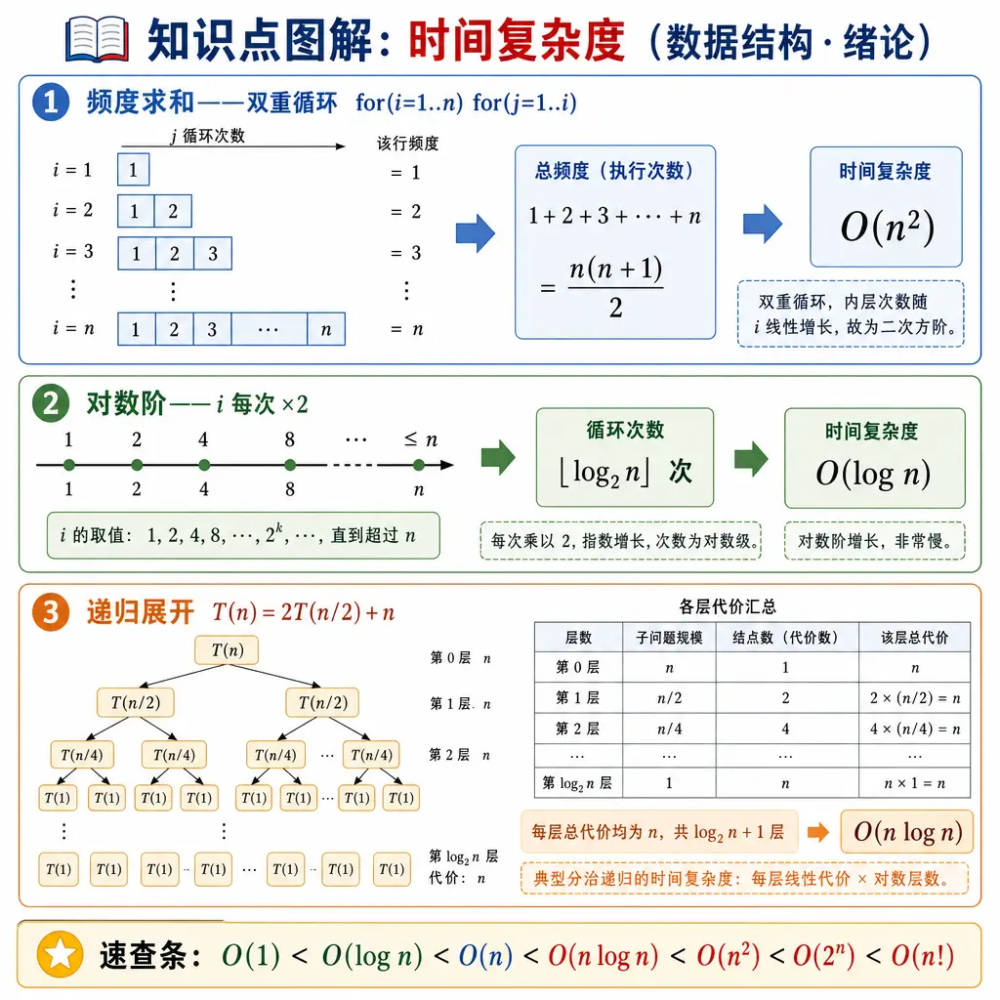
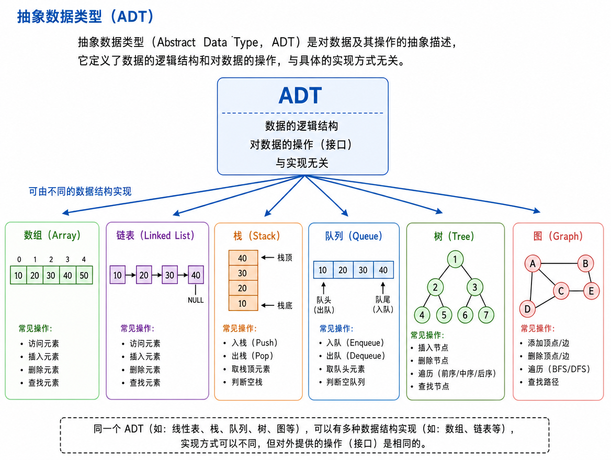
【分值占比】约 2~4 分
【考频】⭐⭐（低频但基础）
【难度】⭐
【必背】
- 数据结构三要素：逻辑结构、存储结构、运算
- 抽象数据类型（ADT）的三元组定义
- 算法五大特性：有穷性、确定性、可行性、输入、输出
- 时间复杂度与空间复杂度的定义与计算
- 大O记法规则：$O(1) < O(\log n) < O(n) < O(n\log n) < O(n^2) < O(n^3) < O(2^n) < O(n!) < O(n^n)$
🔑 口诀：常对幂指阶——常数阶 $O(1)$、对数阶 $O(\log n)$、幂阶 $O(n^k)$（含 $O(n\log n)$ 介于 $O(n)$ 与 $O(n^2)$ 之间）、指数阶 $O(2^n)$、阶乘阶 $O(n!)$，依次递增。
【核心概念】
1.1 数据结构的基本概念
数据：信息的载体，能被计算机识别、存储和加工的符号集合。
数据元素：数据的基本单位，可由若干数据项组成。
数据项：构成数据元素的不可分割的最小单位。
数据对象：性质相同的数据元素的集合，是数据的一个子集。
数据结构：相互之间存在一种或多种特定关系的数据元素的集合，包含三要素： - 逻辑结构：数据元素之间的逻辑关系 - 集合：无关系 - 线性结构：一对一 - 树形结构：一对多 - 图状/网状结构：多对多 - 存储结构（物理结构）：数据在计算机中的表示 - 顺序存储：逻辑相邻则物理相邻 - 链式存储：借助指针表示逻辑关系 - 索引存储：建立附加索引表 - 散列存储：根据关键字计算存储地址 - 运算：施加在数据上的操作（增删改查等）
抽象数据类型（ADT）：指一个数学模型以及定义在该模型上的一组操作。ADT 仅取决于其逻辑特性，与计算机内部的表示和实现无关。ADT 可用三元组表示： $$ADT = (D, S, P)$$ 其中 $D$ 是数据对象，$S$ 是 $D$ 上的关系集，$P$ 是对 $D$ 的基本操作集。
定义格式（教材口径）：
ADT 抽象数据类型名 {
数据对象：<数据对象的定义>
数据关系：<数据关系的定义>
基本操作：<基本操作的定义>
} ADT 抽象数据类型名
⚠️ 易错警示：ADT 描述的是"做什么"而非"怎么做"；同一种 ADT（如线性表）既可用顺序存储实现，也可用链式存储实现，二者只是同一逻辑结构的不同物理实现。
1.2 算法的基本概念
算法：对特定问题求解步骤的一种描述，是指令的有限序列。
算法五大特性： | 特性 | 含义 | |------|------| | 有穷性 | 算法必须在执行有穷步后结束，每步在有穷时间内完成 | | 确定性 | 每条指令必须有确切的含义，无二义性 | | 可行性 | 算法中描述的操作都可以通过已经实现的基本运算执行有限次来实现 | | 输入 | 零个或多个输入 | | 输出 | 一个或多个输出 |
好算法的标准：正确性、可读性、健壮性、效率与低存储量需求。
1.3 算法的时间复杂度
语句频度：语句在算法中被重复执行的次数。
时间复杂度 $T(n)$：算法中所有语句频度之和，表示为问题规模 $n$ 的函数。
大O记法（渐近上界）：$T(n) = O(f(n))$，表示存在正常数 $C$ 和 $n_0$，当 $n \geq n_0$ 时，$T(n) \leq C \cdot f(n)$。
大Ω记法（渐近下界）：$T(n) = \Omega(g(n))$，表示存在正常数 $C$ 和 $n_0$，当 $n \geq n_0$ 时，$T(n) \geq C \cdot g(n)$。
大Θ记法（渐近紧确界）：$T(n) = \Theta(h(n))$，当且仅当 $T(n) = O(h(n))$ 且 $T(n) = \Omega(h(n))$，即存在正常数 $C_1, C_2$ 和 $n_0$，当 $n \geq n_0$ 时，$C_1 \cdot h(n) \leq T(n) \leq C_2 \cdot h(n)$。
💡 技巧：考研默认用大 O 分析最坏情形上界；题目若问"该算法的执行时间为 $\Omega(\cdot)$"，考察的往往是最好情形的下界。
常见时间复杂度：
| 复杂度 | 名称 | 示例 |
|---|---|---|
| $O(1)$ | 常数阶 | 数组访问 a[i] |
| $O(\log n)$ | 对数阶 | 二分查找 |
| $O(n)$ | 线性阶 | 线性查找 |
| $O(n\log n)$ | 线性对数阶 | 快速排序平均、归并排序 |
| $O(n^2)$ | 平方阶 | 冒泡排序、选择排序 |
| $O(n^3)$ | 立方阶 | Floyd算法 |
| $O(2^n)$ | 指数阶 | 汉诺塔问题 |
| $O(n!)$ | 阶乘阶 | 全排列问题 |
加法规则：$T(n) = T_1(n) + T_2(n) = O(\max(f(n), g(n)))$
乘法规则：$T(n) = T_1(n) \times T_2(n) = O(f(n) \times g(n))$
最坏/平均/最好时间复杂度：通常分析最坏时间复杂度，表示任何输入实例的运行时间上界。
复杂度计算典型例题：
【例1】（循环嵌套）求下列程序段中语句 x++ 的频度及时间复杂度：
for (i = 1; i <= n; i++)
for (j = 1; j <= i; j++)
x++;
解答要点：内层循环次数取决于外层变量 $i$，总频度为 $$\sum_{i=1}^{n} i = \frac{n(n+1)}{2}$$ 故 $T(n) = O(n^2)$。⚠️ 注意内层上界是 $i$ 而不是 $n$，不能简单按"两层循环乘起来是 $n^2$"记结论，要会求和推导。
【例2】（非常规步长）求下列程序段的时间复杂度：
for (i = 1; i <= n; i *= 2)
x++;
解答要点：设循环执行 $t$ 次，则 $2^t \leq n < 2^{t+1}$，得 $t = \lfloor \log_2 n \rfloor$，故 $T(n) = O(\log n)$。💡 循环变量每次"乘倍增/折半减"时，时间复杂度一定是对数阶。
【例3】（递归递推）设某递归算法满足 $$T(n) = 2T\left(\frac{n}{2}\right) + n, \quad T(1) = 1$$ 求 $T(n)$ 的渐近阶。
解答要点：逐层展开（设 $n = 2^k$）： $$T(n) = 2T\left(\frac{n}{2}\right) + n = 2\left[2T\left(\frac{n}{4}\right) + \frac{n}{2}\right] + n = 4T\left(\frac{n}{4}\right) + 2n = \cdots$$ 展开 $k = \log_2 n$ 层后，每层代价均为 $n$，共 $\log_2 n + 1$ 层，故 $T(n) = n(\log_2 n + 1) = O(n\log n)$。这正是归并排序的递推模型，也可由主定理直接得出。
1.4 空间复杂度
空间复杂度 $S(n)$：算法所耗费的存储空间与问题规模 $n$ 的函数关系。
存储空间包括： - 算法本身占据的空间 - 输入/输出数据占据的空间 - 辅助空间（算法执行过程中额外需要的空间，通常指这部分）
原地工作：算法所需的辅助空间为 $O(1)$。
递归算法的空间复杂度：递归调用的深度决定空间复杂度。每层调用需在递归工作栈中保存返回地址、实参和局部变量。
【例】求下列递归求阶乘算法的空间复杂度：
int fact(int n) {
if (n <= 1) return 1;
else return n * fact(n - 1);
}
解答要点：递归调用深度为 $n$，每层消耗常数个存储单元，故 $S(n) = O(n)$。⚠️ 对比：非递归（循环）版本的阶乘算法只需常数个辅助变量，$S(n) = O(1)$。💡 结论：递归算法的时间复杂度看递推式，空间复杂度看递归深度。
⚠️ 易错警示 - ❌ 混淆"算法特性"与"好算法的标准"：五大特性是必有的，好算法是更高的要求 - ❌ 时间复杂度计算时忽略最高阶项的系数和低阶项 - ❌ 递归算法的时间复杂度要用递推公式或主定理求解，不能直接数循环层数 - ❌ 空间复杂度只算辅助空间，不算输入数据本身占用的空间
【真题速查】
| 年份 | 题号 | 考点 |
|---|---|---|
| 2023 | 1 | 时间复杂度计算 |
| 2022 | 1 | 算法复杂度分析 |
| 2021 | 1 | 时间复杂度与递归 |
| 2019 | 1 | 时间复杂度计算 |
| 2014 | 1 | 时间复杂度与循环嵌套 |
逐题真题：先阅读上方知识点，再按年份展开下列原题；每道题均已对应本章节知识点。
- 2024 年选择题未单独覆盖本章；不按题号硬凑，建议查看历年原卷或本章例题。


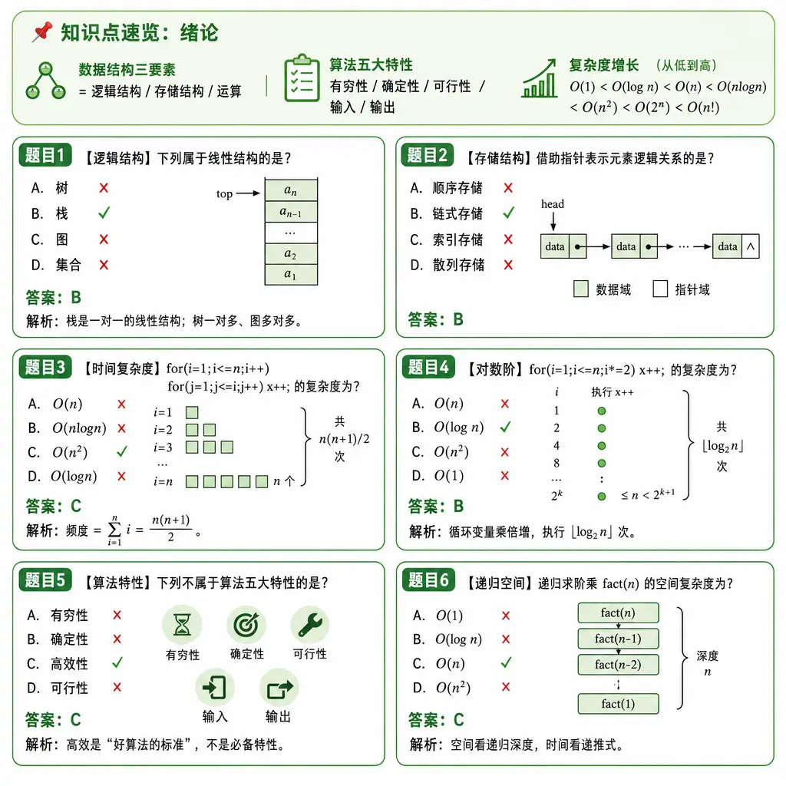
（考点归类供参考，具体题号以历年原卷为准）
第2章 线性表
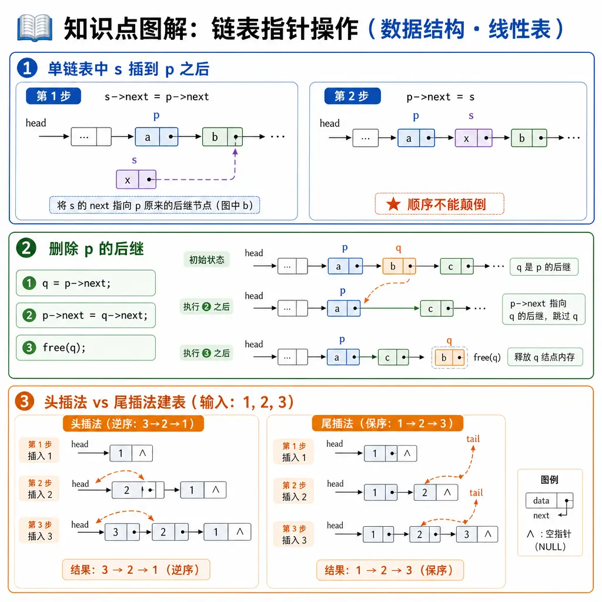
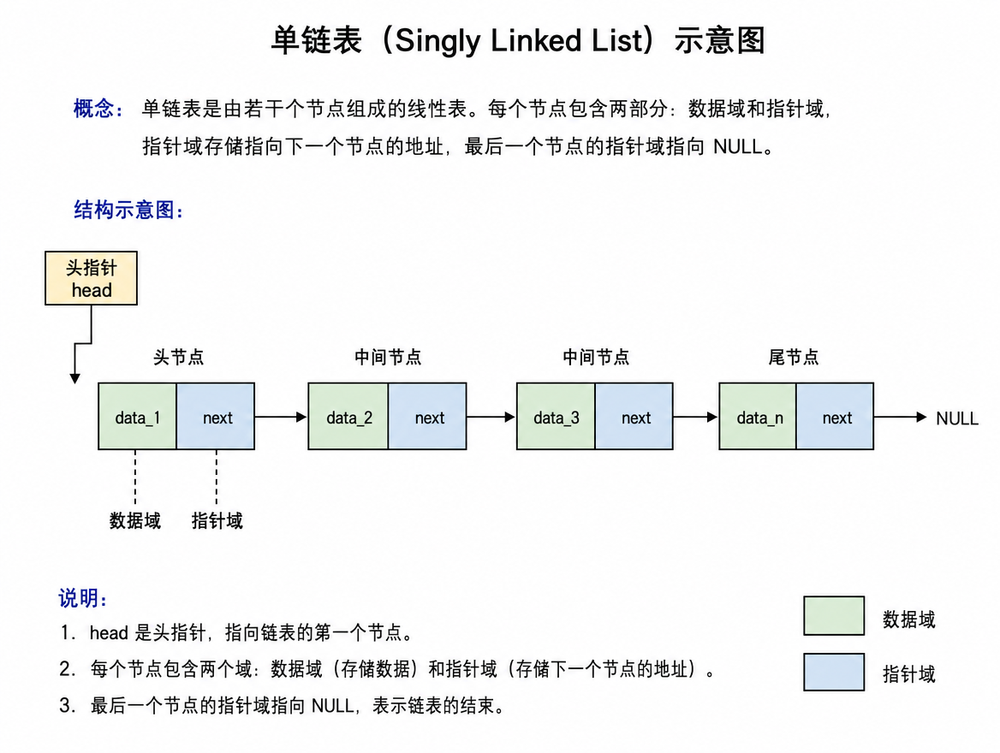
【分值占比】约 4~8 分
【考频】⭐⭐⭐（中等频率，常与算法题结合）
【难度】⭐⭐
【必背】
- 线性表的定义与逻辑特点
- 顺序表的插入/删除/按值查找实现及移动元素个数
- 单链表、双链表、循环链表的插入/删除指针操作
- 头插法与尾插法建立链表
- 循环链表仅设尾指针的妙用、约瑟夫问题
- 静态链表的原理
【核心概念】
2.1 线性表的定义
线性表：$n$ 个数据特性相同的元素的有限序列。$L = (a_1, a_2, \ldots, a_n)$
特点：除首元素外，每个元素有且仅有一个直接前驱；除尾元素外，每个元素有且仅有一个直接后继。
2.2 顺序表
顺序表：用一组地址连续的存储单元依次存储线性表中的数据元素。
静态分配：
#define MAXSIZE 100
typedef struct {
ElemType data[MAXSIZE]; // 存储空间
int length; // 当前长度
} SqList;
动态分配：
#define INITSIZE 100
typedef struct {
ElemType *data; // 指向动态分配数组的指针
int MaxSize; // 当前最大容量
int length; // 当前长度
} SeqList;
顺序表的存储地址计算： $$LOC(a_i) = LOC(a_1) + (i-1) \times \mathrm{sizeof}(ElemType)$$
💡 技巧：由此公式可知顺序表支持随机存取，任一元素的存取时间均为 $O(1)$，这是顺序表相对链表最核心的优势。
插入操作（含合法性检查与表满判断）：
bool ListInsert(SqList &L, int i, ElemType e) {
if (i < 1 || i > L.length + 1) return false; // i 合法范围 [1, length+1]
if (L.length >= MAXSIZE) return false; // 表满，无法插入
for (int j = L.length; j >= i; j--)
L.data[j] = L.data[j-1]; // 第 i 个及之后元素后移
L.data[i-1] = e; // 第 i 个位置对应下标 i-1
L.length++;
return true;
}
移动元素个数为 $n-i+1$： - 最好：$O(1)$（表尾插入） - 最坏：$O(n)$（表头插入） - 平均：$\sum_{i=1}^{n+1} p_i (n-i+1) = \frac{n}{2}$（等概率 $p_i = \frac{1}{n+1}$），$O(n)$
删除操作：
bool ListDelete(SqList &L, int i, ElemType &e) {
if (i < 1 || i > L.length) return false; // i 合法范围 [1, length]
e = L.data[i-1]; // 带回被删元素
for (int j = i; j < L.length; j++)
L.data[j-1] = L.data[j]; // 第 i 个之后元素前移
L.length--;
return true;
}
移动元素个数为 $n-i$： - 最好：$O(1)$（删除表尾） - 最坏：$O(n)$（删除表头） - 平均：$\sum_{i=1}^{n} p_i (n-i) = \frac{n-1}{2}$（等概率 $p_i = \frac{1}{n}$），$O(n)$
⚠️ 易错警示：插入与删除的 $i$ 合法范围不同——插入是 $[1, n+1]$（可插到表尾之后），删除是 $[1, n]$。
按值查找（返回第一个值等于 $e$ 的元素位序，找不到返回 0）：
int LocateElem(SqList L, ElemType e) {
for (int i = 0; i < L.length; i++)
if (L.data[i] == e) return i + 1; // 返回位序，非下标
return 0;
}
- 最好：$O(1)$
- 最坏：$O(n)$
- 平均：$O(n)$
动态扩容（动态顺序表容量不足时申请更大空间）：
void IncreaseSize(SeqList &L, int len) {
ElemType *p = L.data;
L.data = (ElemType*)malloc((L.MaxSize + len) * sizeof(ElemType));
for (int i = 0; i < L.length; i++)
L.data[i] = p[i]; // 将数据复制到新区域
L.MaxSize += len;
free(p); // 释放原空间
}
⚠️ 动态扩容需复制全部元素，单次代价 $O(n)$；malloc 出来的空间要用 free 释放，防止内存泄漏。
2.3 单链表
单链表：用任意的存储单元存储线性表元素，通过指针域表示逻辑关系。
typedef struct LNode {
ElemType data;
struct LNode *next;
} LNode, *LinkList;
头结点的优势： - 使链表第一个位置操作与其他位置统一 - 空表与非空表处理统一
插入操作（后插，已知前驱结点 $p$）：
s->next = p->next;
p->next = s;
⚠️ 顺序不能颠倒！
指定结点前插（经典考点：在 $p$ 所指结点之前插入元素 $e$）：
思路：仍在 $p$ 之后插入新结点，再交换两结点的数据域，把"前插"转化为"后插 + 数据交换"，时间复杂度 $O(1)$。
bool InsertPriorNode(LNode *p, ElemType e) {
if (p == NULL) return false;
LNode *s = (LNode*)malloc(sizeof(LNode));
if (s == NULL) return false;
s->next = p->next;
p->next = s; // 新结点 s 后插到 p 之后
s->data = p->data; // 原 p 的数据后移到 s
p->data = e; // 新元素填入 p
return true;
}
💡 技巧：单链表普通前插需从头扫描找前驱（$O(n)$），交换数据域法只需 $O(1)$；同理"删除指定结点 $p$"也可把 $p$ 后继的数据复制到 $p$、再删除 $p$ 的后继来实现 $O(1)$（注意 $p$ 是尾结点时此法失效）。
删除操作（删除 $p$ 的后继）：
q = p->next;
p->next = q->next;
free(q);
头插法建立链表（元素顺序与输入相反）：
LinkList HeadInsert() {
LNode *s; int x;
LinkList L = (LinkList)malloc(sizeof(LNode));
L->next = NULL; // 初始为空链表
scanf("%d", &x);
while (x != -1) {
s = (LNode*)malloc(sizeof(LNode));
s->data = x;
s->next = L->next;
L->next = s;
scanf("%d", &x);
}
return L;
}
时间复杂度：$O(n)$，空间复杂度：$O(1)$
尾插法建立链表（元素顺序与输入一致）：
LinkList TailInsert() {
LNode *s, *r; int x;
LinkList L = (LinkList)malloc(sizeof(LNode));
r = L; // r始终指向尾结点
scanf("%d", &x);
while (x != -1) {
s = (LNode*)malloc(sizeof(LNode));
s->data = x;
r->next = s;
r = s;
scanf("%d", &x);
}
r->next = NULL;
return L;
}
按序号查找（返回第 $i$ 个结点，$i$ 不合法返回 NULL）：
LNode* GetElem(LinkList L, int i) {
if (i < 1) return NULL;
LNode *p = L->next; // p 指向首元结点
int j = 1;
while (p != NULL && j < i) {
p = p->next;
j++;
}
return p; // p 为空说明 i 超过表长
}
时间复杂度：$O(n)$
按值查找（返回第一个数据域等于 $e$ 的结点）：
LNode* LocateElem(LinkList L, ElemType e) {
LNode *p = L->next;
while (p != NULL && p->data != e)
p = p->next;
return p;
}
时间复杂度：$O(n)$
求表长：从首元结点起逐一遍历计数，$O(n)$
2.4 双链表
typedef struct DNode {
ElemType data;
struct DNode *prior, *next;
} DNode, *DLinkList;
插入操作（在 $p$ 后插入 $s$）：
s->next = p->next;
p->next->prior = s;
s->prior = p;
p->next = s;
⚠️ 注意：如果 $p$ 是尾结点，需特殊处理！
删除操作（删除 $p$ 的后继）：
q = p->next;
p->next = q->next;
if (q->next != NULL) q->next->prior = p;
free(q);
2.5 循环链表
- 循环单链表：尾结点的指针域指向头结点，形成环。在带头结点的循环单链表中，判空条件为
L->next == L（仅适用此前提；不带头结点时判空应为L == NULL）。 - 循环双链表：尾结点的后继指向头结点，头结点的前驱指向尾结点
- 判空（带头结点）：
L->next == L && L->prior == L
⚠️ 易错警示：结点的指针域只能指向结点——"尾结点指向头指针"的说法是错误的，应表述为"尾结点的指针域指向头结点"。
🔑 高频考点：循环单链表若仅设尾指针 rear（不设头指针），则 rear 即尾结点，rear->next 即头结点，rear->next->next 即首元结点——表头、表尾均可在 $O(1)$ 时间内访问。因此在循环链表的合并、出队入队等操作中，通常只设尾指针不设头指针。
【例】约瑟夫问题：$n$ 个人（编号 $1 \sim n$）围成一圈，从第 1 个人开始报数，数到 $m$ 的人出列，从下一人重新报数，直到所有人出列，求出列顺序。
思路：用不带头结点的循环单链表模拟围圈，每次从当前位置数 $m$ 步，删除对应结点。
void Josephus(int n, int m) {
// 建表：创建 n 个结点的循环单链表，rear 指向尾结点
LinkList rear = (LinkList)malloc(sizeof(LNode));
rear->data = 1;
rear->next = rear; // 初始只有 1 个结点，自成环
for (int i = n; i >= 2; i--) { // 头插法建立 2..n
LNode *s = (LNode*)malloc(sizeof(LNode));
s->data = i;
s->next = rear->next;
rear->next = s;
}
// 报数出列
LNode *pre = rear, *p = rear->next; // p 指向当前报数者，pre 为其前驱
while (p->next != p) { // 圈中多于一人
for (int i = 1; i < m; i++) { pre = p; p = p->next; }
printf("%d ", p->data); // 输出出列者编号
pre->next = p->next; // 删除 p
free(p);
p = pre->next; // 从下一人重新报数
}
printf("%d\n", p->data); // 最后幸存者
free(p);
}
解答要点：共出列 $n$ 次，每次报数最多走 $m$ 步，时间复杂度 $O(nm)$，空间复杂度 $O(n)$（链表本身）。
2.6 静态链表
静态链表：用数组来模拟链表，数组元素包含数据域 data 和游标 cur（后继元素在数组中的下标）。
#define MAXSIZE 100
typedef struct {
ElemType data;
int cur; // 游标：后继元素的下标；cur = 0 表示无后继（相当于 NULL）
} SLinkList[MAXSIZE];
数组状态示例：存放线性表 $(b, c, d, e)$，约定 0 号单元作头结点（不存数据）：
| 下标 | data | cur |
|---|---|---|
| 0 | — | 1 |
| 1 | b | 2 |
| 2 | c | 3 |
| 3 | d | 4 |
| 4 | e | 0 |
从头结点游标 cur = 1 出发，沿游标链 1 → 2 → 3 → 4 → 0 即可依次访问 $b, c, d, e$；cur = 0 即链尾。未被占用的分量另链成一条备用链表（记录其头下标，如 av），插入时从备用链表取结点，删除时把结点还回备用链表。
操作特点：插入、删除只需修改游标，不需移动元素；但查找仍需从头顺链扫描，$O(n)$，且表长不能超过 MAXSIZE。
适用场景：不支持指针的低级语言（如某些嵌入式环境）。
2.7 顺序表与链表比较
| 比较维度 | 顺序表 | 链表 |
|---|---|---|
| 存储密度 | 高（只存数据） | 低（需存指针） |
| 存取方式 | 随机存取 $O(1)$ | 顺序存取 $O(n)$ |
| 插入删除 | 需移动元素 $O(n)$ | 不需移动 $O(1)$（找到位置后） |
| 空间分配 | 预先分配，可能浪费或溢出 | 动态分配，更灵活 |
| 适用场景 | 查多改少、表长变化不大 | 改多查少、表长变化大 |
【经典算法】
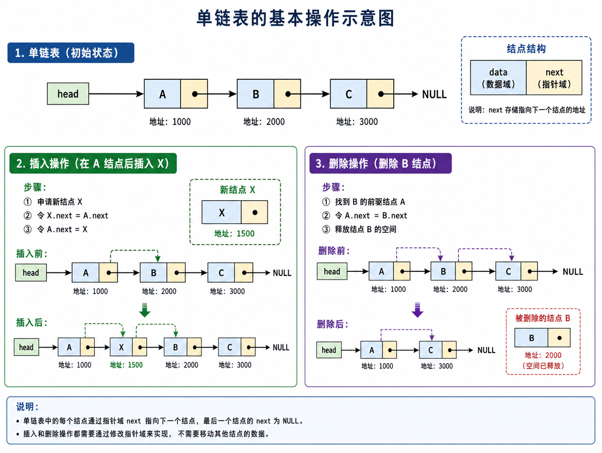
1. 逆转单链表
void Reverse(LinkList &L) {
LNode *p = L->next, *r;
L->next = NULL;
while (p != NULL) {
r = p->next; // 保存后继
p->next = L->next; // 头插
L->next = p;
p = r;
}
}
2. 找中间结点（快慢指针）
LNode* FindMid(LinkList L) {
LNode *slow = L->next, *fast = L->next;
while (fast != NULL && fast->next != NULL) {
slow = slow->next;
fast = fast->next->next;
}
return slow;
}
3. 判断是否有环（Floyd判圈算法）
bool HasCycle(LinkList L) {
LNode *slow = L->next, *fast = L->next;
while (fast != NULL && fast->next != NULL) {
slow = slow->next;
fast = fast->next->next;
if (slow == fast) return true;
}
return false;
}
4. 找倒数第 k 个结点（双指针一趟扫描）
思路：两指针 $p, q$ 先拉开 $k$ 个结点的间距，再同步前进；当 $p$ 到达链尾（NULL）时，$q$ 所指即倒数第 $k$ 个结点。
LNode* FindKthLast(LinkList L, int k) {
LNode *p = L->next, *q = L->next;
for (int i = 0; i < k; i++) {
if (p == NULL) return NULL; // 表长不足 k
p = p->next;
}
while (p != NULL) {
p = p->next;
q = q->next;
}
return q;
}
时间复杂度 $O(n)$，空间复杂度 $O(1)$。💡 真题中还常考"判断 k 合法性后输出该结点的值并返回 1/0"的完整算法题写法，注意评分标准看：思想正确、代码可实现、复杂度达标。
5. 判断两单链表是否相交，并求首个公共结点
思路：若两无环单链表相交，则必呈"Y"形——两表尾结点必相同（指针相同）。据此： - 仅判断相交：分别扫描到两表尾结点，比较指针是否相等，$O(m+n)$。 - 求首个公共结点：先求两表长度之差 $dist$，让长表指针先走 $dist$ 步，再两指针同步前进，第一个相同结点即答案。
LNode* FindFirstCommon(LinkList L1, LinkList L2) {
int len1 = Length(L1), len2 = Length(L2);
LNode *longL = len1 > len2 ? L1->next : L2->next;
LNode *shortL = len1 > len2 ? L2->next : L1->next;
int dist = abs(len1 - len2);
while (dist--) longL = longL->next; // 长表先走 dist 步
while (longL != shortL) {
longL = longL->next;
shortL = shortL->next;
}
return longL; // 不相交时循环至双双为 NULL，返回 NULL
}
时间复杂度 $O(m+n)$，空间复杂度 $O(1)$。
6. 删除绝对值重复的结点
【例】单链表保存 $m$ 个整数（可能为负），结点值的绝对值 $\leq n$。设计时间尽量高效的算法，删除链表中 $|data|$ 重复的结点（保留首次出现者）。
思路：空间换时间——申请长度为 $n+1$ 的布尔数组 visited 记录各绝对值是否已出现，一趟扫描完成删除。
void DelAbsDup(LinkList L, int n) {
bool *visited = (bool*)calloc(n + 1, sizeof(bool));
LNode *pre = L, *p = L->next;
while (p != NULL) {
int v = abs(p->data);
if (visited[v]) { // 该绝对值已出现，删除 p
pre->next = p->next;
free(p);
p = pre->next;
} else {
visited[v] = true; // 首次出现，标记并保留
pre = p;
p = p->next;
}
}
free(visited);
}
时间复杂度 $O(m)$，空间复杂度 $O(n)$。⚠️ 注意：被删结点必须 free，且删除后 pre 不动、p 后移；保留时 pre 与 p 同步后移。
⚠️ 易错警示 - ❌ 链表插入/删除操作中指针赋值顺序错误，导致断链 - ❌ 循环链表的判空条件与单链表不同，且"尾结点指向头结点"不能写成"指向头指针" - ❌ 双链表插入时忘记修改前驱指针 - ❌ 静态链表的游标含义混淆（是数组下标，不是地址）
【真题速查】
| 年份 | 题号 | 考点 |
|---|---|---|
| 2024 | 41 | 链表应用题 |
| 2022 | 41 | 链表综合应用 |
| 2020 | 41 | 链表与数组综合 |
| 2019 | 41 | 链表操作 |
| 2015 | 41 | 单链表算法设计 |
逐题真题：先阅读上方知识点，再按年份展开下列原题；每道题均已对应本章节知识点。

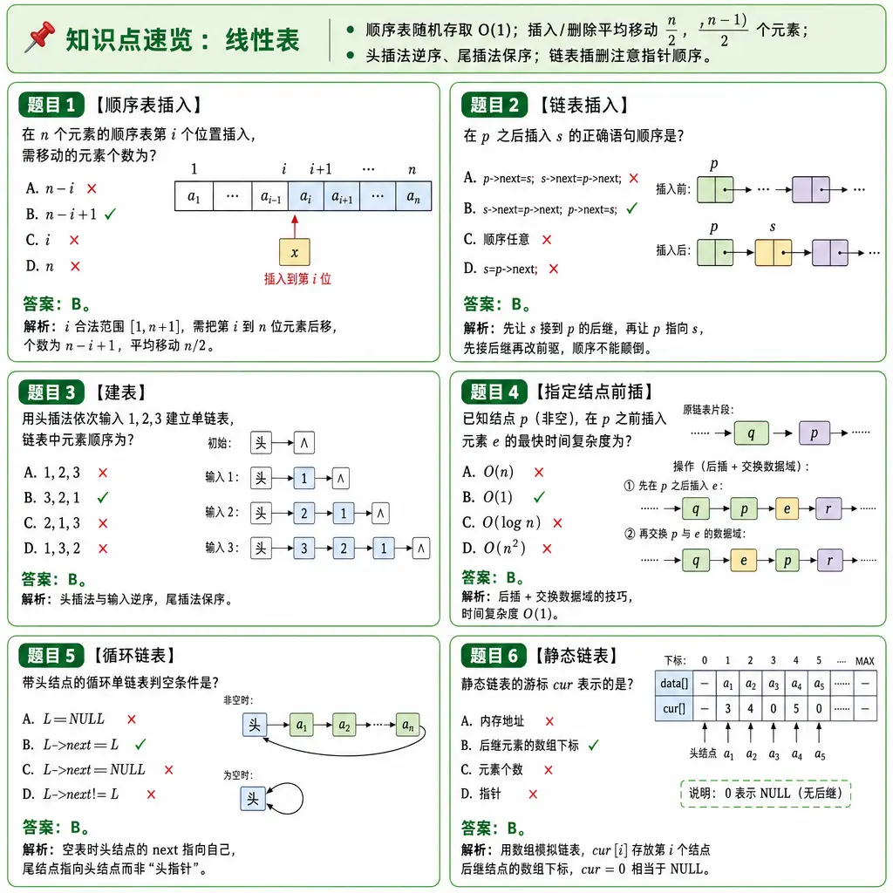
（考点归类供参考，具体题号以历年原卷为准）
第3章 栈、队列和数组
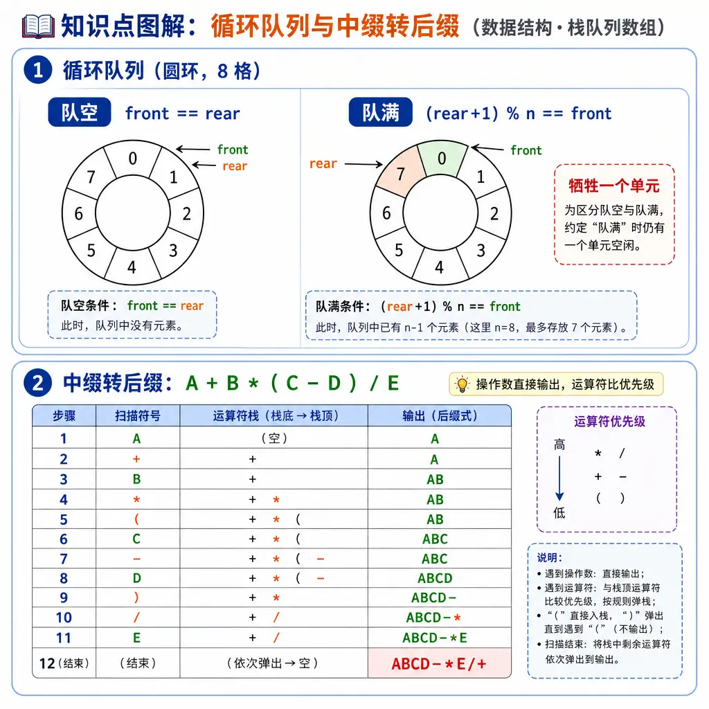
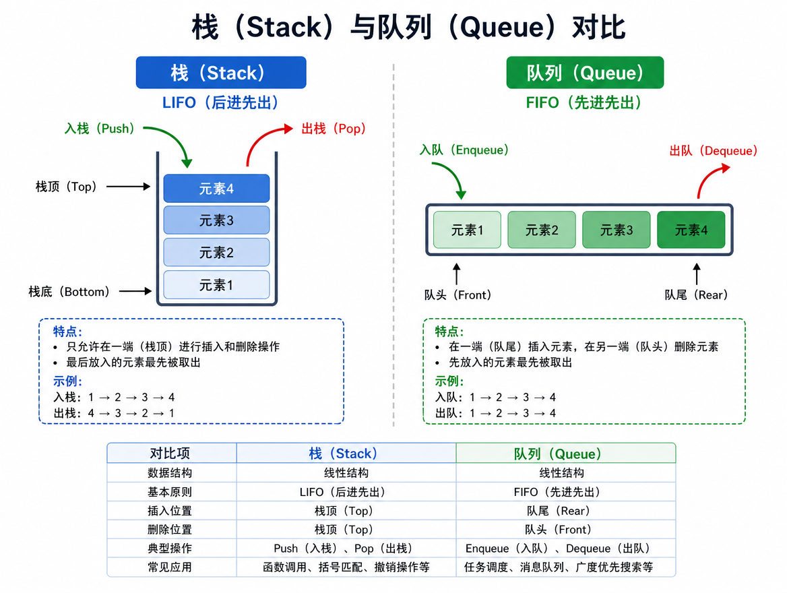
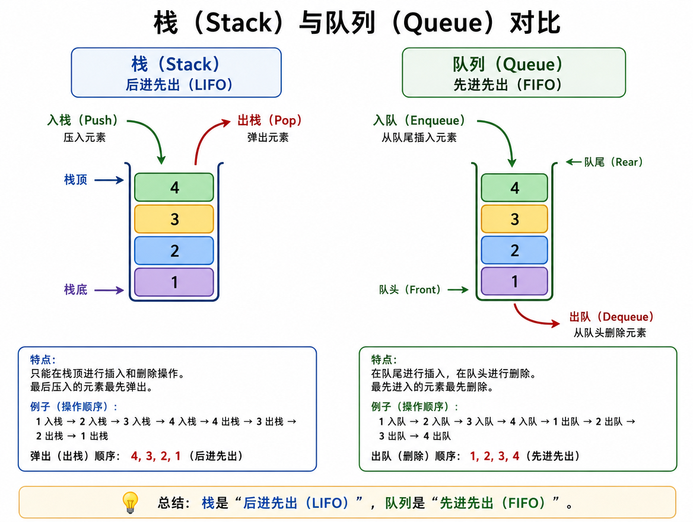
【分值占比】约 4~8 分
【考频】⭐⭐⭐⭐（高频，栈常考表达式求值、递归）
【必背】
- 栈的LIFO特性、队列的FIFO特性
- 顺序栈与链栈的基本操作
- 循环队列的判空/判满条件及元素个数计算
- 中缀表达式转后缀表达式（栈的应用）
- 递归与栈的关系
- 特殊矩阵的压缩存储地址计算
【核心概念】
3.1 栈（Stack）
定义：只允许在一端（栈顶）进行插入和删除操作的线性表。
特点：后进先出（LIFO, Last In First Out）
基本操作：
- InitStack(&S)：初始化
- Push(&S, x)：入栈
- Pop(&S, &x)：出栈
- GetTop(S, &x)：读栈顶
- StackEmpty(S)：判空
顺序栈：
#define MAXSIZE 100
typedef struct {
ElemType data[MAXSIZE];
int top; // 栈顶指针
} SqStack;
// top == -1 表示空栈
// 入栈：S.data[++S.top] = x;
// 出栈：x = S.data[S.top--];
共享栈：两个栈共享一片空间，栈底在两端，向中间生长。
- 栈1空：top1 == -1
- 栈2空：top2 == MAXSIZE
- 栈满：top1 + 1 == top2
链栈：用链表实现，通常没有头结点，所有操作在头部进行。
出入栈序列的合法性判断：
🔑 判定规则：入栈序列固定时，一个输出序列合法，当且仅当其中任意时刻"后入栈的元素先出栈"不被违反。实操方法：按输出序列逐项模拟入栈/出栈过程，若某一步需要的元素不在栈顶（压在别的元素下面或已经输出），则该序列不合法。
💡 Catalan 数：$n$ 个互不相同的元素依次入栈，所有合法出栈序列的个数为 $$C_n = \frac{1}{n+1}\binom{2n}{n} = \frac{(2n)!}{(n+1)!\,n!}$$ 常用值：$n=3$ 时 $C_3 = 5$，$n=4$ 时 $C_4 = 14$，$n=5$ 时 $C_5 = 42$。
【例】入栈序列为 1, 2, 3, 4，判断出栈序列 4, 3, 1, 2 是否合法？
解：4 最先出栈，说明 1, 2, 3, 4 已全部入栈，栈内自顶向下为 4, 3, 2, 1。4 出栈后，剩余元素只能按 3, 2, 1 的顺序出栈，不可能出现"3 出栈后先出 1 再出 2"。故该序列不合法。
3.2 队列（Queue）
定义：只允许在一端插入（队尾），另一端删除（队头）的线性表。
特点：先进先出（FIFO, First In First Out）
基本操作：
- InitQueue(&Q)：初始化
- EnQueue(&Q, x)：入队
- DeQueue(&Q, &x)：出队
- GetHead(Q, &x)：读队头
- QueueEmpty(Q)：判空
循环队列：
用模运算解决假溢出问题：
typedef struct {
ElemType data[MAXSIZE];
int front, rear; // 队头指针、队尾指针
} SqQueue;
判空与判满的方法：
| 方案 | 判空 | 判满 | 队列长度 |
|---|---|---|---|
| 牺牲一个单元 | front == rear |
(rear+1)%MAXSIZE == front |
(rear-front+MAXSIZE)%MAXSIZE |
| 增设size字段 | size == 0 |
size == MAXSIZE |
size |
| 增设tag字段 | front == rear && tag == 0 |
front == rear && tag == 1 |
需计算 |
链队列：带头结点的链表，头指针指向头结点，尾指针指向尾结点。
双端队列：两端都可以入队和出队。
- ⚠️ 栈能得到的输出序列，双端队列都能得到；反之不然——栈的输出序列集合是双端队列输出序列集合的真子集（输入受限或输出受限的双端队列同样成立）。
【例】输入序列 1, 2, 3, 4，输出序列 4, 1, 2, 3：栈不可能做到（4 先出栈说明 1, 2, 3 已压在栈内，只能接着出 3, 2, 1）；但双端队列可以做到——1, 2, 3, 4 依次从同一端入队，先从另一端出 4，再从原端依次出 1, 2, 3。
- 💡 判断输出序列合法性的通用方法：按给定输出序列逐步模拟入队/出队过程，某一步两端都无法提供所需元素即为不合法。切忌用"栈做不到，所以双端队列也做不到"来推断。
3.3 栈的应用
1. 括号匹配
bool BracketCheck(char *str) {
InitStack(&S);
for (int i = 0; str[i] != '\0'; i++) {
if (str[i] == '(' || str[i] == '[' || str[i] == '{')
Push(&S, str[i]);
else {
if (StackEmpty(S)) return false;
char topElem;
Pop(&S, &topElem);
if (str[i] == ')' && topElem != '(') return false;
if (str[i] == ']' && topElem != '[') return false;
if (str[i] == '}' && topElem != '{') return false;
}
}
return StackEmpty(S);
}
2. 表达式求值
| 表达式类型 | 特点 | 示例 |
|---|---|---|
| 中缀表达式 | 运算符在操作数之间 | A + B * C |
| 前缀表达式（波兰式） | 运算符在操作数之前 | + A * B C |
| 后缀表达式（逆波兰式） | 运算符在操作数之后 | A B C * + |
中缀转后缀（栈实现）： 1. 操作数直接输出 2. 运算符与栈顶比较优先级，高则入栈，低或等于则弹出栈顶输出 3. 左括号入栈，右括号则弹出至左括号 4. 结束后弹出栈中所有运算符
后缀表达式求值（栈实现）：
从左到右扫描后缀表达式： - 遇操作数：入栈 - 遇运算符：弹出栈顶两个元素，先弹出的是右操作数、后弹出的是左操作数，计算后将结果入栈 - 扫描结束，栈中唯一元素即为结果
【例】将中缀表达式 A+B*(C-D)/E 转换为后缀表达式，并给出求值过程。
转换过程（栈底在左）：
| 扫描符号 | 运算符栈 | 后缀输出 |
|---|---|---|
| A | （空） | A |
| + | + | A |
| B | + | A B |
| * | + * | A B |
| ( | + * ( | A B |
| C | + * ( | A B C |
| - | + * ( - | A B C |
| D | + * ( - | A B C D |
| ) | + * | A B C D - |
| / | + / | A B C D - * |
| E | + / | A B C D - * E |
| 扫描结束 | （空） | A B C D - * E / + |
得后缀表达式：A B C D - * E / +
求值过程：
| 扫描符号 | 操作数栈（底→顶） | 说明 |
|---|---|---|
| A B C D | A B C D | 操作数依次入栈 |
| - | A B (C-D) | 弹出 D、C，计算 C-D |
| * | A (B*(C-D)) | 弹出 (C-D)、B，计算 B*(C-D) |
| E | A (B*(C-D)) E | 操作数入栈 |
| / | A (B*(C-D)/E) | 弹出 E、B(C-D)，计算 B(C-D)/E |
| + | A+B*(C-D)/E | 弹出两项相加，即最终结果 |
⚠️ 易错警示：减法和除法中操作数顺序不能颠倒——先弹出栈顶的是右操作数。
3. 递归
递归的实现依赖栈：每次递归调用将参数、局部变量、返回地址压栈。
递归转非递归：可以用栈模拟（如二叉树遍历的非递归实现）。
3.4 数组与特殊矩阵
数组的存储地址：
一维数组：$LOC(a_i) = LOC(a_0) + i \times L$
二维数组（行优先）：$LOC(a_{i,j}) = LOC(a_{0,0}) + (i \times n + j) \times L$
二维数组（列优先）：$LOC(a_{i,j}) = LOC(a_{0,0}) + (j \times m + i) \times L$
特殊矩阵的压缩存储：
| 矩阵类型 | 存储方式 | 元素个数 | 地址公式 |
|---|---|---|---|
| 对称矩阵 | 只存下三角+对角线 | $\frac{n(n+1)}{2}$ | $k = \frac{i(i+1)}{2} + j$（$i \geq j$） |
| 三角矩阵 | 上/下三角+常数 | $\frac{n(n+1)}{2} + 1$ | 类似对称矩阵 |
| 对角矩阵（三对角） | 三条对角线 | $3n-2$ | $k = 2i + j$（$i,j,k$ 均从 0 开始） |
| 稀疏矩阵 | 三元组/十字链表 | 非零元个数 | 顺序或链式存储 |
⚠️ 下标基准：上表地址公式默认矩阵下标与数组下标均从 0 开始。若题目规定矩阵下标 $i,j$ 从 1 开始（数组 $k$ 仍从 0 开始）： - 对称矩阵（$i \geq j$）：$k = \dfrac{i(i-1)}{2} + j - 1$ - 三对角矩阵：$k = 2i + j - 3$
💡 技巧：统一按"前面行的元素个数 + 本行内偏移量"现场推导，不必硬背公式，下标基准自然不会错。
稀疏矩阵三元组：(row, col, value)
十字链表：每个非零元结点包含行指针、列指针、行号、列号、值。
【易错警示】
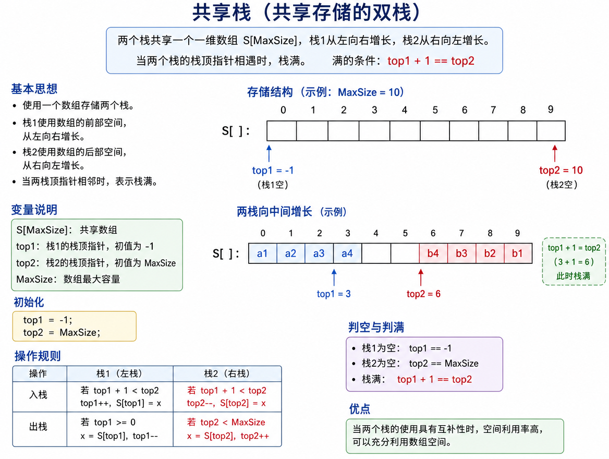
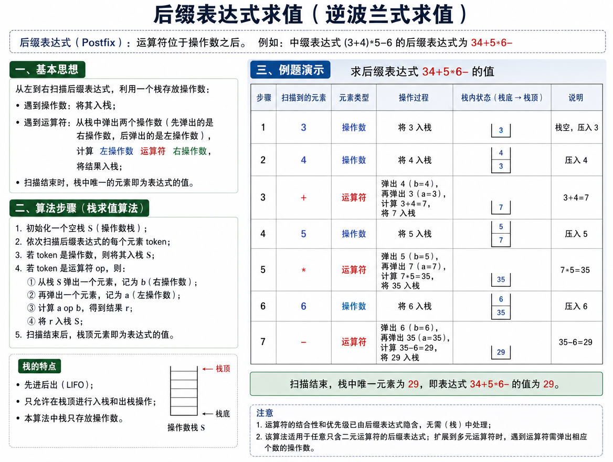
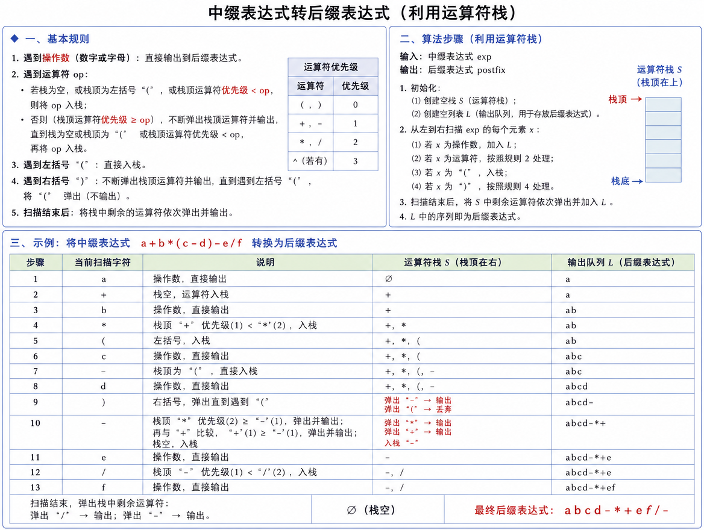
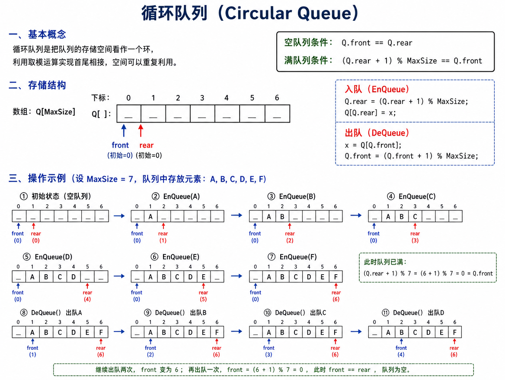
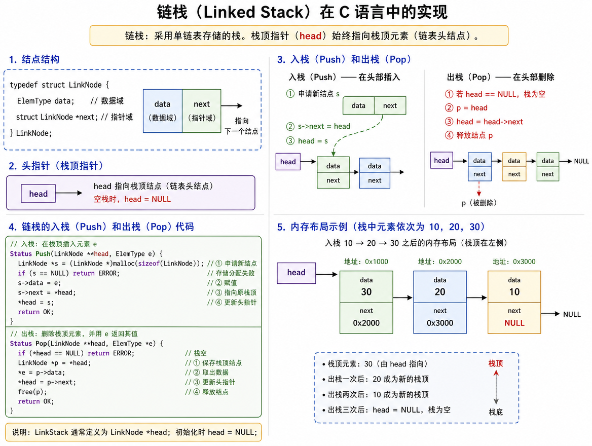
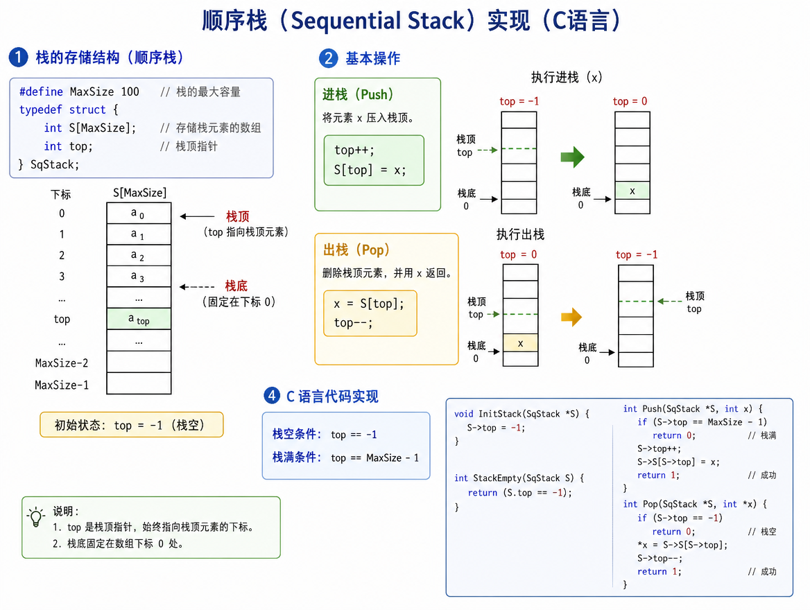
- ⚠️ 循环队列的判满条件记错，导致队满时还能入队
- ⚠️ 栈的top指针初始值：有的教材设
-1，有的设0，要注意题目规定 - ⚠️ 共享栈判满条件：
top1 + 1 == top2，不是top1 == top2 - ⚠️ 中缀转后缀时，运算符优先级相同要考虑结合性（左结合则栈顶弹出）
- ⚠️ 特殊矩阵地址计算时下标从0还是从1开始
【真题速查】
| 年份 | 题号 | 考点 |
|---|---|---|
| 2024 | 2, 42 | 栈的应用、表达式 |
| 2023 | 2, 41 | 循环队列、栈与队列综合 |
| 2022 | 2 | 栈的输出序列 |
| 2021 | 2, 41 | 中缀表达式转换、队列应用 |
| 2020 | 2 | 循环队列 |
| 2019 | 2 | 栈的出入序列 |
逐题真题：先阅读上方知识点，再按年份展开下列原题；每道题均已对应本章节知识点。


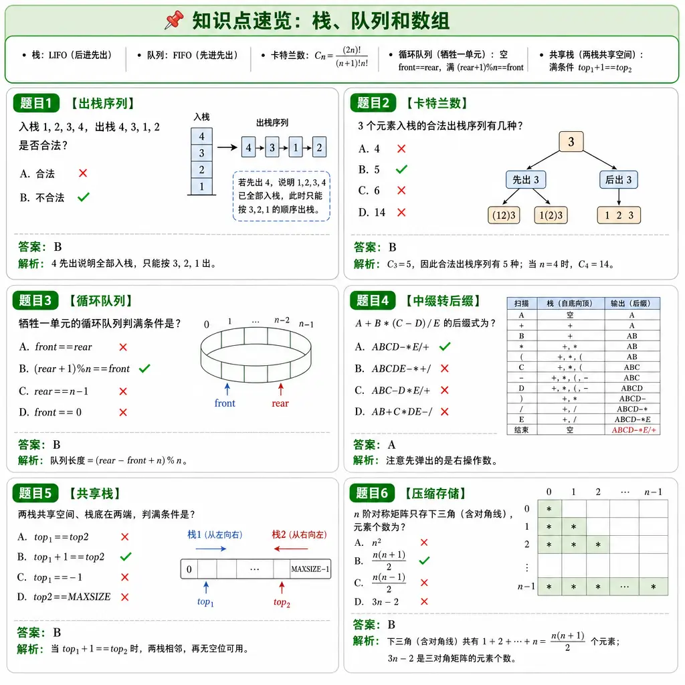
（考点归类供参考，具体题号以历年原卷为准）
第4章 树与二叉树
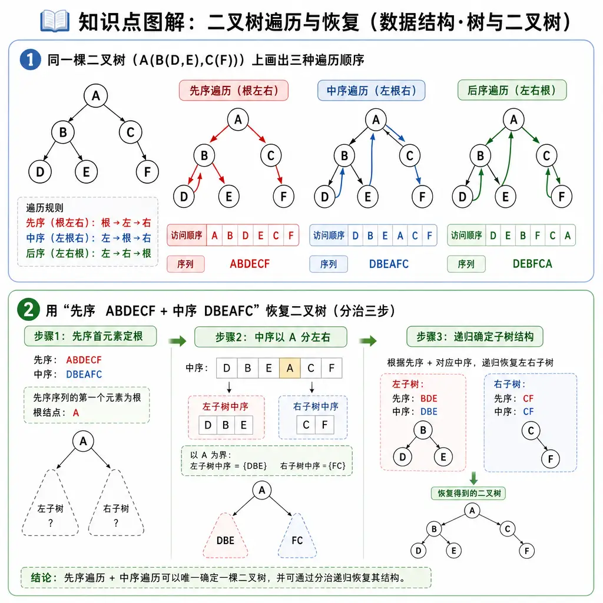
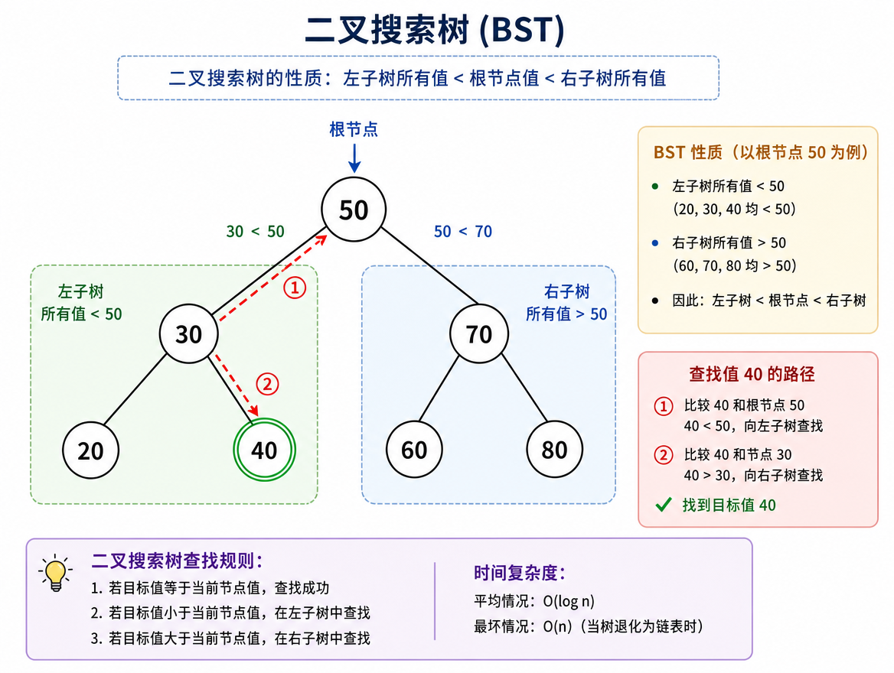
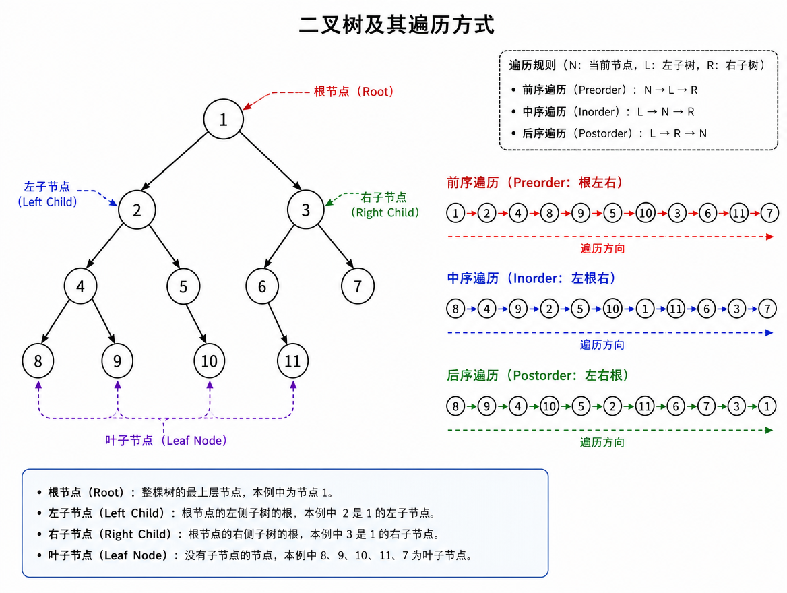

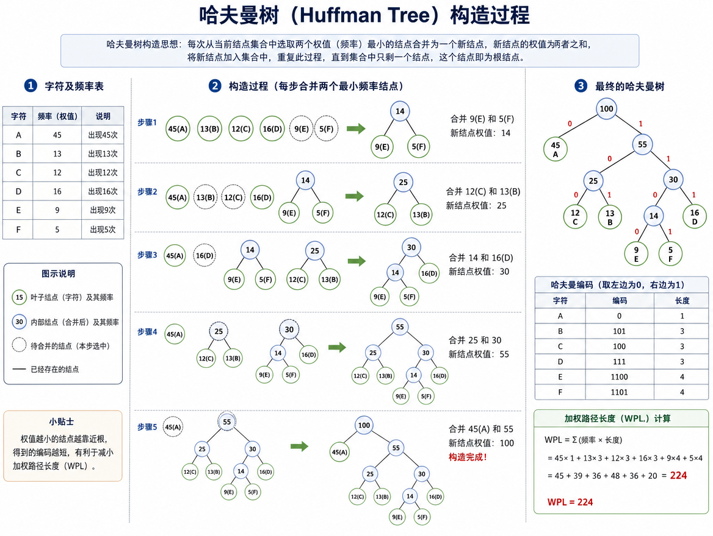
【分值占比】约 8~12 分
【考频】⭐⭐⭐⭐⭐（最高频，每年必考大题）
【必背】
- 二叉树的性质（5条核心性质）
- 满二叉树、完全二叉树的定义与性质
- 二叉树的遍历（先序、中序、后序、层序）及递归/非递归实现
- 遍历序列恢复二叉树
- 线索二叉树的线索化与遍历
- 二叉排序树（BST）的定义、插入、删除、查找
- 平衡二叉树（AVL）的定义、旋转操作
- 哈夫曼树的构造与带权路径长度计算
- 并查集的实现
【核心概念】
4.1 树的基本概念
树的定义：$n$ 个结点的有限集。$n=0$ 为空树。
基本术语： - 结点的度：该结点拥有的子树个数 - 树的度：树中各结点度的最大值 - 叶子结点：度为0的结点 - 层次：根为第1层，其孩子为第2层... - 深度/高度：树中结点的最大层次 - 路径：两个结点之间经过的结点序列 - 路径长度：路径上的边数
树的性质： 1. 结点数 = 所有结点度数之和 + 1（根结点无父） 2. 度为 $m$ 的树中，第 $i$ 层最多有 $m^{i-1}$ 个结点 3. 高度为 $h$ 的 $m$ 叉树最多有 $\frac{m^h - 1}{m - 1}$ 个结点 4. 具有 $n$ 个结点的 $m$ 叉树的最小高度为 $\lceil \log_m(n(m-1)+1) \rceil$
4.2 二叉树
二叉树的定义：每个结点至多有两棵子树（左子树、右子树），子树有左右之分。
特殊二叉树： - 满二叉树：每层结点数都达到最大，高度 $h$ 的满二叉树有 $2^h - 1$ 个结点 - 完全二叉树：按层序编号，与满二叉树一一对应 - 叶子结点只可能在最后两层 - 最多只有一个度为1的结点，且只有左孩子
二叉树的性质：
性质1：非空二叉树的第 $i$ 层最多有 $2^{i-1}$ 个结点
性质2：高度为 $h$ 的二叉树最多有 $2^h - 1$ 个结点
性质3：叶子结点数 $n_0$ 与度为2的结点数 $n_2$ 满足： $$n_0 = n_2 + 1$$
性质4：具有 $n$ 个结点的完全二叉树的高度为 $\lceil \log_2(n+1) \rceil$ 或 $\lfloor \log_2 n \rfloor + 1$
性质5：完全二叉树按层序编号，对编号为 $i$ 的结点： - 双亲：$\lfloor i/2 \rfloor$（$i > 1$） - 左孩子：$2i$（$2i \leq n$） - 右孩子：$2i + 1$（$2i + 1 \leq n$）
4.3 二叉树的存储
顺序存储：按完全二叉树编号存入数组 - 适合完全二叉树、满二叉树 - 一般二叉树需补空结点，可能浪费空间
链式存储（二叉链表）：
typedef struct BiTNode {
ElemType data;
struct BiTNode *lchild, *rchild;
} BiTNode, *BiTree;
含有 $n$ 个结点的二叉链表中，有 $n+1$ 个空指针域（由 $2n - (n-1) = n+1$ 得出）。
4.4 二叉树的遍历
| 遍历方式 | 顺序 | 特点 |
|---|---|---|
| 先序遍历（DLR） | 根-左-右 | 第一个访问根 |
| 中序遍历（LDR） | 左-根-右 | 二叉排序树中序有序 |
| 后序遍历（LRD） | 左-右-根 | 最后访问根 |
| 层序遍历 | 按层从上到下、从左到右 | 用队列实现 |
递归实现：
void PreOrder(BiTree T) {
if (T != NULL) {
visit(T);
PreOrder(T->lchild);
PreOrder(T->rchild);
}
}
非递归中序遍历（栈实现）：
void InOrder(BiTree T) {
InitStack(&S);
BiTree p = T;
while (p != NULL || !StackEmpty(S)) {
if (p != NULL) {
Push(&S, p);
p = p->lchild; // 走到最左
} else {
Pop(&S, p);
visit(p);
p = p->rchild;
}
}
}
非递归后序遍历（栈 + 标记最近访问结点）：
void PostOrder(BiTree T) {
InitStack(&S);
BiTree p = T, r = NULL; // r 记录最近访问过的结点
while (p != NULL || !StackEmpty(S)) {
if (p != NULL) {
Push(&S, p);
p = p->lchild; // 一路向左
} else {
GetTop(S, p); // 只读栈顶，不弹出
if (p->rchild != NULL && p->rchild != r)
p = p->rchild; // 右子树未访问，转向右
else {
Pop(&S, p);
visit(p); // 左右子树均已访问，访问根
r = p; // 标记最近访问
p = NULL;
}
}
}
}
💡 关键：只有"右子树不存在或右子树刚被访问过"时才能访问根，这正是后序非递归比先序/中序多一个标记 r 的原因（也可用结点附标志位的标记法等价实现）。
层序遍历：
void LevelOrder(BiTree T) {
InitQueue(&Q);
EnQueue(&Q, T);
while (!QueueEmpty(Q)) {
DeQueue(&Q, &p);
visit(p);
if (p->lchild != NULL) EnQueue(&Q, p->lchild);
if (p->rchild != NULL) EnQueue(&Q, p->rchild);
}
}
遍历序列恢复二叉树： - 中序 + 先序 → 唯一确定二叉树 - 中序 + 后序 → 唯一确定二叉树 - 中序 + 层序 → 唯一确定二叉树 - ⚠️ 先序 + 后序 不能 唯一确定（除非是完全二叉树）
【例】已知某二叉树的先序序列为 ABDECF，中序序列为 DBEAFC，恢复该二叉树并写出后序序列。
解：
1. 先序首元素 A 为根；在中序中，A 左侧 DBE 为左子树、右侧 FC 为右子树。
2. 左子树先序 BDE、中序 DBE：B 为根，左孩子 D、右孩子 E。
3. 右子树先序 CF、中序 FC：C 为根，左孩子 F、无右孩子。
A
/ \
B C
/ \ /
D E F
后序序列：DEBFCA。
💡 技巧：先序（或后序）定"根"，中序定"左右子树的划分"，然后递归分治；画树验证时各子树结点集合必须与三种序列一致。
4.5 线索二叉树
线索化：利用空指针域存储遍历前驱/后继。
typedef struct ThreadNode {
ElemType data;
struct ThreadNode *lchild, *rchild;
int LTag, RTag; // 0: 孩子，1: 线索
} ThreadNode, *ThreadTree;
| 线索类型 | LTag=1时lchild指向 | RTag=1时rchild指向 |
|---|---|---|
| 中序线索 | 中序前驱 | 中序后继 |
| 先序线索 | 先序前驱 | 先序后继 |
| 后序线索 | 后序前驱 | 后序后继 |
中序线索化过程：按中序遍历依次访问各结点，设 pre 指向上一个刚访问的结点：
- 若当前结点 p->lchild == NULL，则令 p->lchild = pre，p->LTag = 1（左指针指向前驱）
- 若 pre != NULL 且 pre->rchild == NULL，则令 pre->rchild = p，pre->RTag = 1（前驱结点的右指针指向后继）
中序线索二叉树找后继：
- 若 RTag == 1，rchild 直接为后继
- 若 RTag == 0，后继为右子树的最左下结点
中序线索二叉树找前驱（与找后继对称）：
- 若 LTag == 1，lchild 直接为前驱
- 若 LTag == 0，前驱为左子树的最右下结点
【例】对 4.4 例中的二叉树（先序 ABDECF、中序 DBEAFC）进行中序线索化。
解：中序序列为 D, B, E, A, F, C。逐结点检查空指针： - D（叶子，首结点）：左线索置 NULL（无前驱），右线索指向后继 B - E（叶子）：左线索指向前驱 B，右线索指向后继 A - F（叶子）：左线索指向前驱 A，右线索指向后继 C - C（无右孩子，末结点）：右线索置 NULL - B、A 左右指针均为孩子，不设线索
⚠️ 易错警示：先序线索树找前驱、后序线索树找后继不能只靠线索完成（需知道双亲），这是常考的陷阱；中序线索树找前驱/后继都可以直接完成。
4.6 二叉排序树（BST）
定义：左子树所有结点值 < 根 < 右子树所有结点值，左右子树也是BST。
查找：
BSTNode* BSTSearch(BSTree T, KeyType key) {
while (T != NULL && key != T->key) {
if (key < T->key) T = T->lchild;
else T = T->rchild;
}
return T;
}
平均查找长度：$O(\log n)$（平衡时），$O(n)$（退化为链表时）
插入：查找不成功时插入为新叶子
删除： - 叶子结点：直接删除 - 只有一棵子树：用子树替代 - 有两棵子树：用中序直接后继（右子树最左）或直接前驱（左子树最右）替代
【例】依次插入 50, 30, 70, 20, 40, 60, 80 构造 BST，再删除 50，并计算查找成功与查找失败的 ASL。
解： 1. 构造结果：50 为根，左子树 30(20, 40)，右子树 70(60, 80)，恰为 3 层满树。 2. 删除 50：50 有两棵子树，用中序直接后继 60（右子树最左结点）顶替其位置，再删除原位置的 60（叶子），得到 60(30(20, 40), 70(, 80))。 3. 查找成功（对删除前的 7 结点满树）：第 1 层 1 个结点、第 2 层 2 个、第 3 层 4 个， $$ASL_{\text{成功}} = \frac{1\times1 + 2\times2 + 3\times4}{7} = \frac{17}{7}$$ 4. 查找失败：满树共有 $7+1=8$ 个空指针（失败位置），每个都比较 3 次后落空， $$ASL_{\text{失败}} = \frac{3\times8}{8} = 3$$
💡 若题目要求对删除后的 6 结点树计算 ASL，则 $ASL_{\text{成功}} = \dfrac{1 + 2\times2 + 3\times3}{6} = \dfrac{7}{3}$，$ASL_{\text{失败}} = \dfrac{3\times6 + 2}{8} = \dfrac{5}{2}$（70 的左失败位置只比较 2 次），审题时务必看清针对哪棵树。
⚠️ 易错警示：查找失败的 ASL 只统计与树中关键字的比较次数（最后落到空指针那一次不比较）；$n$ 个结点的 BST 失败位置数恒为 $n+1$。
4.7 平衡二叉树（AVL）
定义：左右子树高度差的绝对值不超过1，且左右子树都是AVL树。
平衡因子：$BF = 左子树高度 - 右子树高度$，取值范围 ${-1, 0, 1}$
最小不平衡子树：插入/删除后第一个 $|BF| > 1$ 的结点为根的子树。
旋转操作：
| 失衡类型 | 条件 | 旋转方式 |
|---|---|---|
| LL | 插入左子树的左子树 | 右单旋 |
| RR | 插入右子树的右子树 | 左单旋 |
| LR | 插入左子树的右子树 | 先左旋后右旋 |
| RL | 插入右子树的左子树 | 先右旋后左旋 |
含有 $n$ 个结点的AVL树的最大高度：$O(\log n)$，约为 $1.44\log_2(n+2) - 0.328$
🔑 口诀：LL 右单旋、RR 左单旋、LR 先左后右、RL 先右后左——"字母即插入路径，反向旋回"。
💡 插入后只需调整最小不平衡子树（离插入点最近的失衡祖先），旋转一次整棵树即恢复平衡，无须继续向上检查（删除则不同，见下）。
【例】依次插入 16, 3, 7, 11, 9, 26, 18, 14, 15，逐步构造 AVL 树（覆盖四种旋转）。
解：
| 插入 | 失衡结点 | 类型 | 调整动作与结果 |
|---|---|---|---|
| 16, 3 | — | — | 无需调整 |
| 7 | 16 | LR（7 在 16 左子树的右子树） | 先左旋 3，再右旋 16 → 7(3, 16) |
| 11 | — | — | 无需调整 |
| 9 | 16 | LL（9 在 16 左子树的左子树） | 右单旋 16 → 11(9, 16) |
| 26 | 7 | RR（26 在 7 右子树的右子树） | 左单旋 7 → 11(7(3, 9), 16(, 26)) |
| 18 | 16 | RL（18 在 16 右子树的左子树） | 先右旋 26，再左旋 16 → 18(16, 26) |
| 14 | — | — | 无失衡（各结点平衡因子均在 ${-1,0,1}$ 内） |
| 15 | 16 | LR（15 在 16 左子树的右子树） | 先左旋 14，再右旋 16 → 15(14, 16) |
最终 AVL 树：11 为根，左子树 7(3, 9)，右子树 18(15(14, 16), 26)。
AVL 的删除：先按 BST 规则删除，再从被删结点的父结点起逐层向上检查平衡因子，发现失衡即按相应类型旋转。与插入不同，删除一次可能导致多个祖先接连失衡，最坏需 $O(\log n)$ 次旋转。
⚠️ 易错警示：判断失衡类型时看的是"插入/删除位置在最小不平衡子树的哪一侧路径上"，不要只看新结点的直接双亲。
4.8 哈夫曼树
带权路径长度（WPL）： $$WPL = \sum_{i=1}^{n} w_i \times l_i$$ 其中 $w_i$ 为叶子权值，$l_i$ 为叶子到根的路径长度。
哈夫曼树：WPL最小的二叉树。
构造方法： 1. 将 $n$ 个权值作为 $n$ 棵只有根结点的二叉树 2. 每次选两个根权值最小的树合并，新根权值为两者之和 3. 重复直至只剩一棵树
性质： - 哈夫曼树中没有度为1的结点（正则二叉树） - 结点总数：$2n - 1$ - 叶子结点数：$n$ - 非叶子结点数：$n - 1$
【例】给定权值集合 ${2, 4, 5, 7}$，构造哈夫曼树并计算 WPL。
解：合并过程如下（每步取最小的两个权值合并）：
| 步骤 | 当前权值集合 | 合并 | 新权值 |
|---|---|---|---|
| 1 | 2, 4, 5, 7 | 2 + 4 | 6 |
| 2 | 5, 6, 7 | 5 + 6 | 11 |
| 3 | 7, 11 | 7 + 11 | 18 |
树形：根 18，左孩子 7、右孩子 11；11 的左孩子 5、右孩子 6；6 的孩子为 2 和 4。各叶子深度：7 为 1，5 为 2，2 和 4 为 3。
$$WPL = 7\times1 + 5\times2 + 2\times3 + 4\times3 = 35$$
💡 技巧：WPL 也等于所有非叶结点（历次合并产生的新权值）之和：$6 + 11 + 18 = 35$，可用于快速验算；合并 $n$ 个权值恰好进行 $n-1$ 次。
⚠️ 易错警示：哈夫曼树的形态不唯一（相等权值的合并次序、左右孩子位置可变），但最小 WPL 唯一；切勿因树形不同而怀疑 WPL 算错。
哈夫曼编码： - 左分支标0，右分支标1 - 叶子结点的编码即为从根到叶子的路径标记 - 哈夫曼编码是前缀编码：任一编码都不是其他编码的前缀
4.9 并查集
定义：管理元素分组的数据结构，支持合并与查询操作。
int parent[MAXSIZE]; // parent[i] < 0 表示 i 是根，|parent[i]| 为该集合元素个数
// 初始化：n 个元素各自独立成集合
void Init(int n) {
for (int i = 0; i < n; i++) parent[i] = -1;
}
// 查找根结点 + 路径压缩
int Find(int x) {
int root = x;
while (parent[root] >= 0) root = parent[root]; // 向上找根
while (x != root) { // 沿途结点直接挂到根下
int next = parent[x];
parent[x] = root;
x = next;
}
return root;
}
// 合并（按秩/规模合并：小集合挂到大集合的根下）
void Union(int x, int y) {
int rootX = Find(x), rootY = Find(y);
if (rootX == rootY) return;
if (parent[rootX] > parent[rootY]) { // rootY 的集合更大（负数更小）
parent[rootY] += parent[rootX];
parent[rootX] = rootY;
} else { // rootX 的集合更大或相等
parent[rootX] += parent[rootY];
parent[rootY] = rootX;
}
}
时间复杂度：按秩合并 + 路径压缩后近似 $O(\alpha(n))$，其中 $\alpha$ 是阿克曼函数的反函数，可视为常数；仅按秩合并时树高为 $O(\log n)$。
常考形式：给定 Union/Find 操作序列，模拟 parent 数组的变化；或求某时刻集合的个数（= parent 数组中负值的个数）、判断两个元素是否连通。
【例】$n = 8$，依次执行 Union(0,1)、Union(2,3)、Union(4,5)、Union(6,7)、Union(0,2)、Union(4,6)、Union(0,4)，按上述代码求最终 parent 数组。
解：
| 操作 | parent 数组（下标 0~7） |
|---|---|
| 初始 | -1, -1, -1, -1, -1, -1, -1, -1 |
| Union(0,1) | -2, 0, -1, -1, -1, -1, -1, -1 |
| Union(2,3) | -2, 0, -2, 2, -1, -1, -1, -1 |
| Union(4,5) | -2, 0, -2, 2, -2, 4, -1, -1 |
| Union(6,7) | -2, 0, -2, 2, -2, 4, -2, 6 |
| Union(0,2) | -4, 0, 0, 2, -2, 4, -2, 6 |
| Union(4,6) | -4, 0, 0, 2, -4, 4, 4, 6 |
| Union(0,4) | -8, 0, 0, 2, 0, 4, 4, 6 |
最终 8 个元素同属一个集合，根为 0。
⚠️ 易错警示：不同教材/题目中 Union 的挂接方向约定不同（规模相等时谁挂谁、rootX 挂 rootY 还是反之），答题前先看清题目约定或所给代码；但"按秩合并 + 路径压缩近似 $O(\alpha(n))$"的结论与约定无关。
4.10 树的存储、树/森林与二叉树的转换
树的存储结构：
| 存储方式 | 结构要点 | 优点 | 缺点 |
|---|---|---|---|
| 双亲表示法 | 数组中每个结点存其双亲的下标 | 找双亲 $O(1)$ | 找孩子需遍历整个数组 |
| 孩子表示法 | 数组 + 每个结点挂一个孩子单链表 | 找孩子方便 | 找双亲难 |
| 孩子兄弟表示法 | firstchild（第一个孩子）+ nextsibling（右兄弟） |
与二叉链表同构，是树 ⇄ 二叉树转换的桥梁 | 找双亲难 |
树 → 二叉树（🔑 口诀：连线—抹线—旋转）： 1. 连线：在所有兄弟结点之间加一条水平连线 2. 抹线：对每个结点，只保留它与第一个孩子（长子）的连线，抹去与其他孩子的连线 3. 旋转：以树根为轴心顺时针旋转 45°，即得二叉树（左孩子右兄弟）
森林 → 二叉树：先将每棵树分别转为二叉树；从第二棵树起，依次把其根作为前一棵树根的右子树（各树根视为兄弟）。逆转换即逆过程：断开根的右子树链，每棵再还原为树。
遍历的对应关系（🔑 必背）：
| 原结构 | 遍历 | 对应二叉树遍历 |
|---|---|---|
| 树 | 先根遍历 | 先序遍历 |
| 树 | 后根遍历 | 中序遍历 |
| 森林 | 先序遍历 | 先序遍历 |
| 森林 | 中序遍历 | 中序遍历 |
⚠️ 易错警示：树没有"中根遍历"（孩子数不定，无法定义"中间"），只有森林才有中序遍历；对应关系是"树的后根 = 二叉树的中序"，而不是"树的后根 = 二叉树的后序"。
【例】树 T：A 的孩子为 B, C, D，B 的孩子为 E。写出 T 的先根、后根序列，并验证与对应二叉树遍历的对应关系。
解：先根序列 ABECD，后根序列 EBCDA。按"左孩子右兄弟"转换：A 的左孩子为 B；B 的左孩子为 E、右兄弟为 C；C 的右兄弟为 D。对应二叉树：先序 ABECD（= 先根 ✓），中序 EBCDA（= 后根 ✓），后序 EDCBA（无对应关系）。
【易错警示】
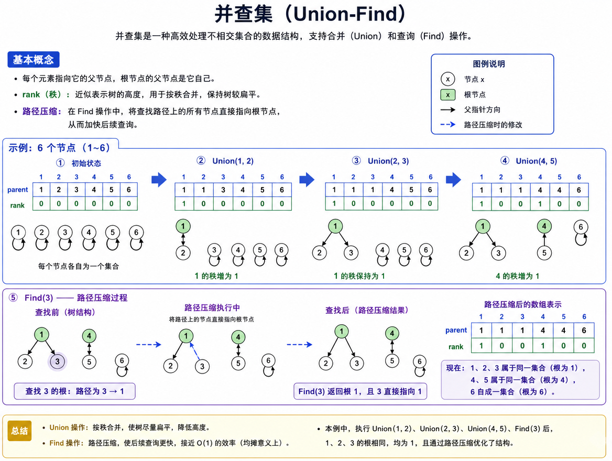
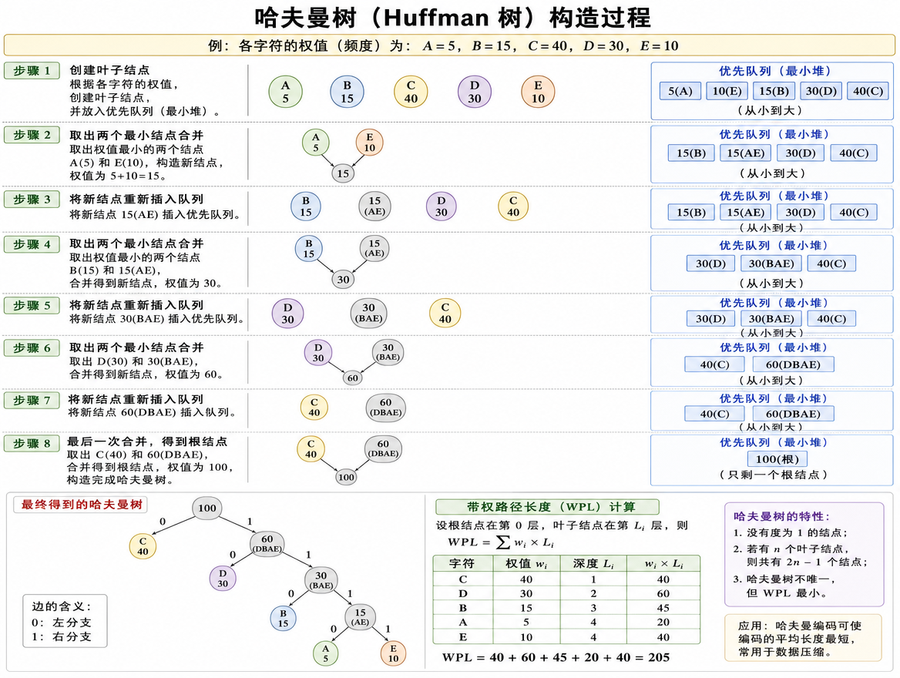
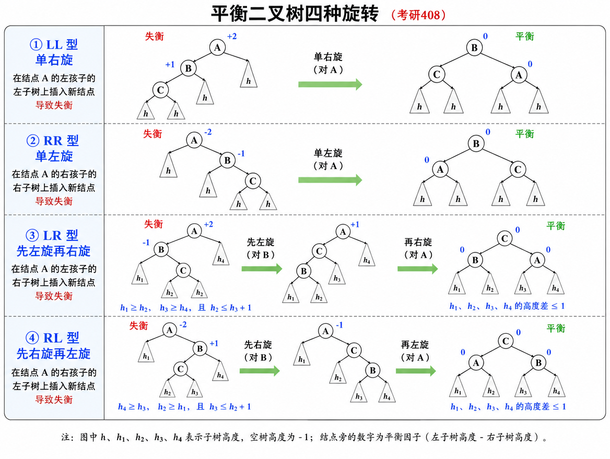
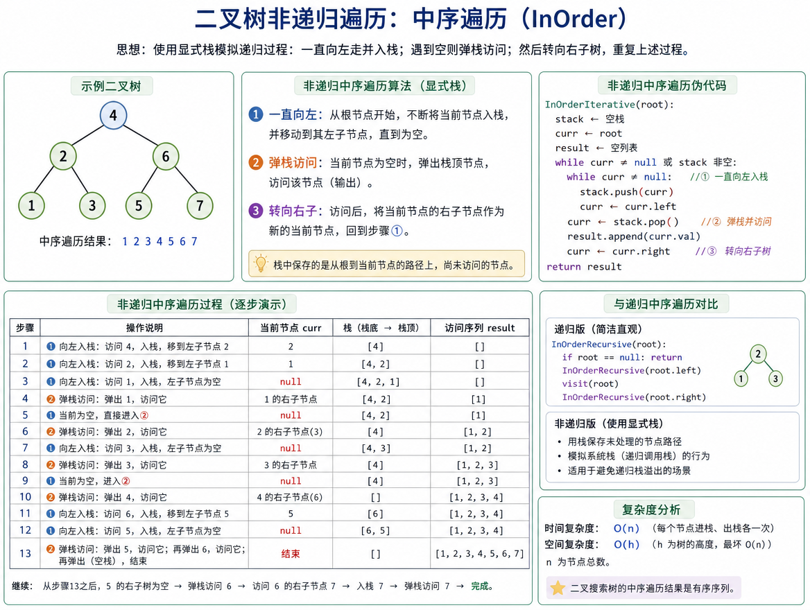
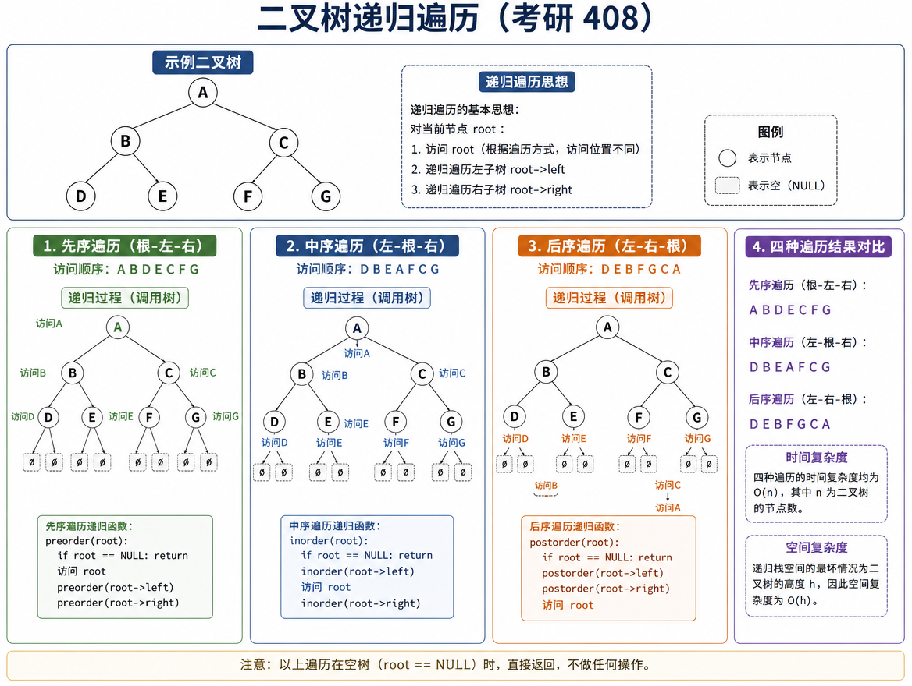
- ⚠️ $n_0 = n_2 + 1$ 这个公式只适用于二叉树，不适用于一般树
- ⚠️ 先序+后序不能唯一确定二叉树，必须有中序
- ⚠️ 线索二叉树中，Tag=0时指针指向孩子，不是线索
- ⚠️ AVL旋转时，LR和RL需要两次旋转，不是一次
- ⚠️ 哈夫曼树是正则二叉树（没有度为1的结点），不是完全二叉树
- ⚠️ 哈夫曼编码长度计算：权值 $w_i$ 为字符频度时，总码长恰好等于 $WPL=\sum w_i l_i$；平均码长 $= WPL \big/ \sum w_i$，不要把 WPL 直接当作平均码长
【真题速查】
| 年份 | 题号 | 考点 |
|---|---|---|
| 2024 | 3, 5, 42 | 遍历、BST、树大题 |
| 2023 | 3, 5, 42 | 线索二叉树、AVL、树大题 |
| 2022 | 3, 5, 42 | 哈夫曼树、BST、树大题 |
| 2021 | 3, 5, 42 | 完全二叉树、遍历、树大题 |
| 2020 | 3, 5, 42 | 遍历序列恢复、AVL、树大题 |
| 2019 | 3, 5, 42 | 二叉树性质、哈夫曼、树大题 |
逐题真题：先阅读上方知识点，再按年份展开下列原题；每道题均已对应本章节知识点。

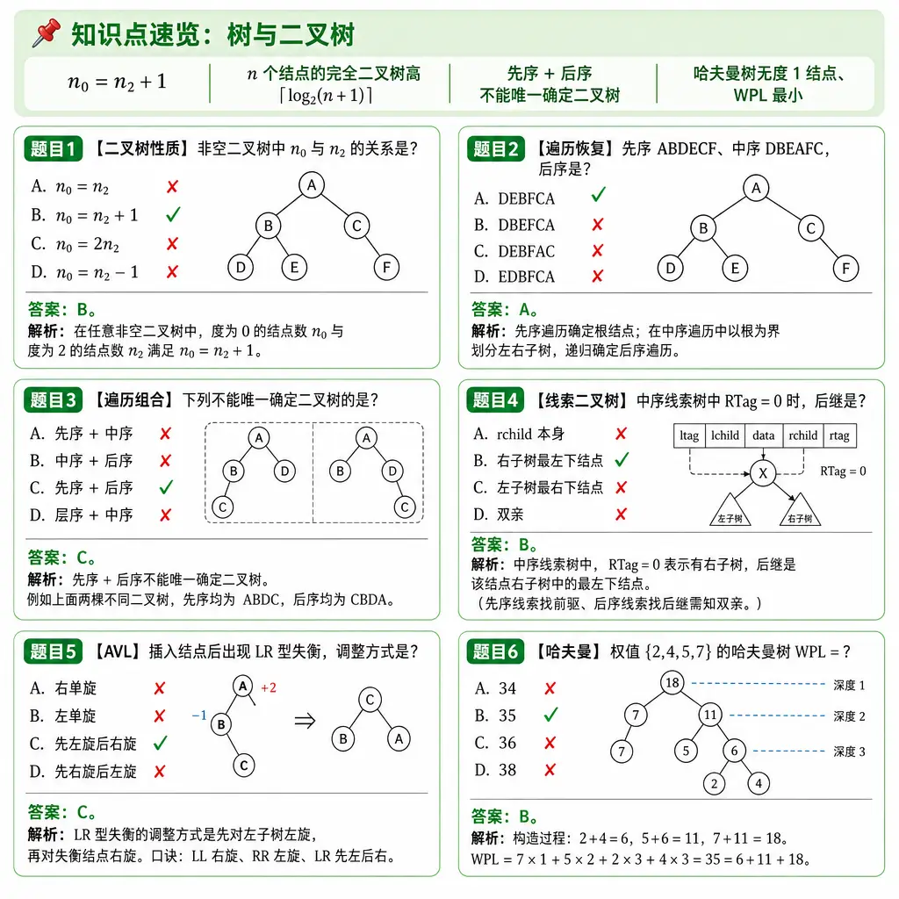
（考点归类供参考，具体题号以历年原卷为准；408 数据结构大题为 41、42 题）
第5章 图
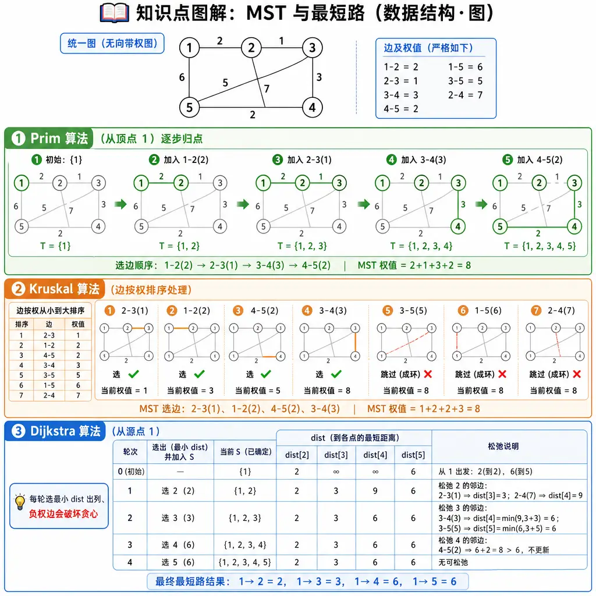
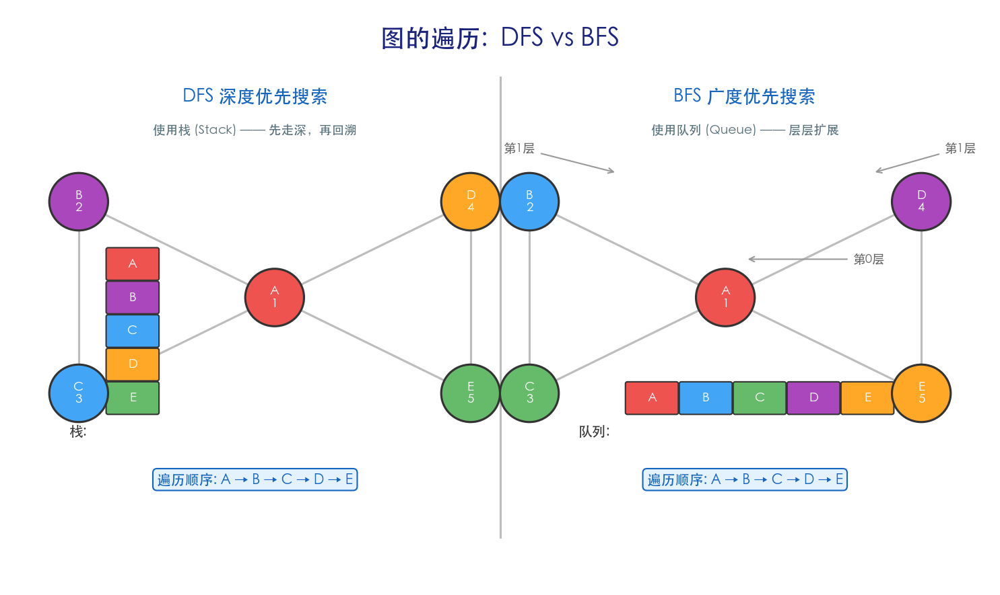
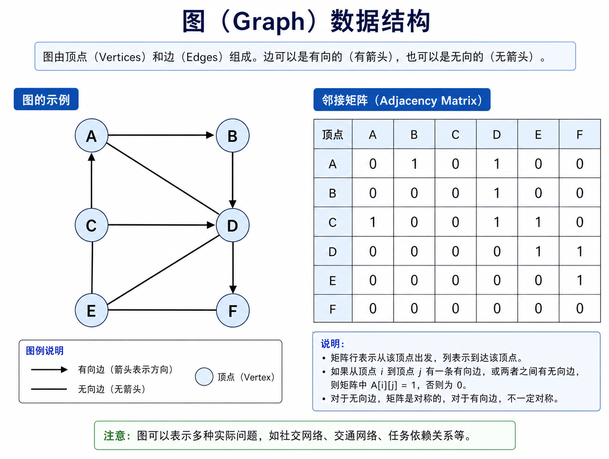
【分值占比】约 8~12 分
【考频】⭐⭐⭐⭐⭐（高频，大题常客，最难章节）
【难度】⭐⭐⭐⭐（概念多、算法多，综合大题高频）
【必背】
- 图的存储结构：邻接矩阵、邻接表、十字链表、邻接多重表
- 图的遍历：DFS、BFS
- 最小生成树：Prim、Kruskal算法
- 最短路径：Dijkstra、Floyd算法
- 拓扑排序与逆拓扑排序
- 关键路径（AOE网）
- 图的连通性、强连通分量
【核心概念】
5.1 图的基本概念
图：$G = (V, E)$，$V$ 为顶点集，$E$ 为边集。
有向图：边有方向，$\langle v_i, v_j \rangle$ 表示从 $v_i$ 到 $v_j$ 的弧。 无向图：边无方向，$(v_i, v_j)$ 表示 $v_i$ 与 $v_j$ 之间的边。
简单图：满足以下两条的图（考研默认讨论简单图）： 1. 不存在重复边（任意两顶点间至多一条边）； 2. 不存在顶点到自身的边（无自环）。
完全图（以下公式均以简单图为前提）： - 无向完全图：任意两顶点间都有边，$n$ 个顶点有 $\frac{n(n-1)}{2}$ 条边 - 有向完全图：任意两顶点间有两条方向相反的弧，$n$ 个顶点有 $n(n-1)$ 条弧
顶点的度： - 无向图：度 = 关联边的数目，$\sum_{v \in V} TD(v) = 2|E|$ - 有向图：入度 $ID(v)$ + 出度 $OD(v)$ = 度，$\sum ID(v) = \sum OD(v) = |E|$
路径：顶点序列，相邻顶点间有边/弧。 路径长度：路径上边/弧的数目。
连通性： - 连通图：无向图中任意两顶点间都有路径 - 强连通图：有向图中任意两顶点间互相可达 - 连通分量：无向图的极大连通子图 - 强连通分量：有向图的极大强连通子图
生成树：包含图中全部 $n$ 个顶点的极小连通子图，有 $n-1$ 条边。
常用数值结论（选择题高频，均对含 $n$ 个顶点的图而言）： 1. $n$ 个顶点的连通无向图，至少有 $n-1$ 条边（即为生成树的情形）。 2. $n$ 个顶点的强连通有向图，至少有 $n$ 条弧（$n$ 个顶点构成一个有向环时取到）。 3. $n$ 个顶点的无向简单图，若边数 $e > \frac{(n-1)(n-2)}{2}$，则该图必连通。
推导要点（结论 3）：若图非连通，必可分成至少两个连通分量。设一个分量含 $k$ 个顶点，其余含 $n-k$ 个顶点，则边数至多为
$$\frac{k(k-1)}{2} + \frac{(n-k)(n-k-1)}{2} \le \frac{(n-1)(n-2)}{2}$$
即非连通简单图的边数上限为 $\frac{(n-1)(n-2)}{2}$，故边数超过它必连通。
【例】一个有 6 个顶点的无向简单图，至少有多少条边才能保证它一定连通？
解：保证必连通的临界值为 $\frac{(6-1)(6-2)}{2} = 10$，故边数 $e > 10$，即至少 $11$ 条边时必连通。注意"至少有 5 条边"是连通所必需而非保证连通的条件，两者不要混淆。
⚠️ 易错警示："$n-1$ 条边"是连通的必要条件而非充分条件——$n$ 个顶点、$n-1$ 条边的图可能不连通（含环且缺边的情形），也可能恰为树。
5.2 图的存储
1. 邻接矩阵：
$$A[i][j] = \begin{cases} 1 & \text{若 } (v_i, v_j) \in E \text{ 或 } \langle v_i, v_j \rangle \in E \ 0 & \text{否则} \end{cases}$$
带权图：$A[i][j] = w_{ij}$ 或 $\infty$
空间复杂度：$O(n^2)$
性质： - 无向图邻接矩阵对称 - 无向图第 $i$ 行（列）非零/非$\infty$元素个数 = 顶点 $i$ 的度 - 有向图第 $i$ 行非零个数 = 出度，第 $i$ 列 = 入度
邻接矩阵的幂（选择题高频）：设 $A$ 为图 $G$ 的邻接矩阵，则 $A^k$（$A$ 的 $k$ 次幂，普通矩阵乘法）中元素
$$A^k[i][j] = \text{从顶点 } i \text{ 到顶点 } j \text{ 长度为 } k \text{ 的路径（允许经过重复顶点/边，即"通路"）的条数}$$
【例】若无向图邻接矩阵 $A$ 中 $A^2[1][3] = 2$，则表示从顶点 1 到顶点 3 长度为 2 的通路有 2 条（如 $1 \to 2 \to 3$ 与 $1 \to 4 \to 3$）。特别地，无向图中 $A^2[i][i]$ = 顶点 $i$ 的度。
2. 邻接表：
对每个顶点建立一个单链表，存储其邻接点。
typedef struct ArcNode { // 边结点
int adjvex; // 邻接点编号
struct ArcNode *nextarc; // 下一条边
// InfoType info; // 边信息（如权值）
} ArcNode;
typedef struct VNode { // 顶点结点
VertexType data;
ArcNode *firstarc; // 第一条边
} VNode, AdjList[MAXSIZE];
typedef struct {
AdjList vertices;
int vexnum, arcnum;
} ALGraph;
空间复杂度：$O(n + e)$（无向图需 $2e$ 个边结点）
| 存储方式 | 空间 | 找邻接点 | 判断边存在 | 适用场景 |
|---|---|---|---|---|
| 邻接矩阵 | $O(n^2)$ | $O(n)$ | $O(1)$ | 稠密图 |
| 邻接表 | $O(n+e)$ | $O(1)$（直接取） | $O(d)$，$d$ 为该顶点的度（需遍历其边链表） | 稀疏图 |
3. 十字链表（有向图的链式存储）：将每个顶点的出边表与入边表结合在一起，每条弧只存一个弧结点，同时链接在弧尾的出边表和弧头的入边表中。
- 弧结点：
{tailvex, headvex, hlink, tlink, info}——tailvex、headvex为弧尾、弧头顶点编号；hlink指向弧头相同的下一条弧（入边表），tlink指向弧尾相同的下一条弧（出边表）。 - 顶点结点：
{data, firstin, firstout}——firstin指向以该顶点为弧头的第一条弧，firstout指向以该顶点为弧尾的第一条弧。
优点：既容易求出度（沿 firstout），也容易求入度（沿 firstin），克服了邻接表求入度需扫描全表的缺点。
4. 邻接多重表（无向图的链式存储）：邻接表中无向图的每条边 $(v_i, v_j)$ 要存两个边结点（分别在 $v_i$、$v_j$ 的边表中），对边的增删需操作两处。邻接多重表中每条边只存储一次（一个边结点），同时挂在两个端点的边表中。
- 边结点：
{ivex, ilink, jvex, jlink, info}——ivex、jvex为两个端点编号；ilink指向依附于ivex的下一条边，jlink指向依附于jvex的下一条边。 - 顶点结点：
{data, firstedge}——指向依附于该顶点的第一条边。
🔑 口诀：十字链表管有向（出入分链、弧存一份），多重表管无向（边存一份、两端挂链）。
5.3 图的遍历
DFS（深度优先搜索）：
bool visited[MAXSIZE];
void DFS(Graph G, int v) {
visit(v);
visited[v] = true;
for (w = FirstNeighbor(G, v); w >= 0; w = NextNeighbor(G, v, w))
if (!visited[w])
DFS(G, w);
}
void DFSTraverse(Graph G) {
for (v = 0; v < G.vexnum; v++) visited[v] = false;
for (v = 0; v < G.vexnum; v++)
if (!visited[v]) DFS(G, v);
}
时间复杂度：邻接矩阵 $O(n^2)$，邻接表 $O(n+e)$ 空间复杂度：$O(n)$（递归工作栈，最坏情况图退化为链，栈深 $n$）
BFS（广度优先搜索）：
void BFS(Graph G, int v) {
visit(v); visited[v] = true;
EnQueue(Q, v);
while (!QueueEmpty(Q)) {
DeQueue(Q, v);
for (w = FirstNeighbor(G, v); w >= 0; w = NextNeighbor(G, v, w))
if (!visited[w]) {
visit(w); visited[w] = true;
EnQueue(Q, w);
}
}
}
时间复杂度：邻接矩阵 $O(n^2)$，邻接表 $O(n+e)$ 空间复杂度：$O(n)$（辅助队列，最坏情况 $n$ 个顶点同时入队）
DFS/BFS 生成树与生成森林： - 对连通图，从任一顶点出发做一次 DFS/BFS，将遍历过程中经过的边（首次到达新顶点所经的边）收集起来，恰构成一棵生成树，分别称为深度优先生成树和广度优先生成树。 - 对非连通图，对每个连通分量各得到一棵生成树，合称生成森林。 - 同一个连通图的 DFS/BFS 生成树一般不唯一（取决于邻接点的访问顺序与起始顶点）。
遍历序列：同一个图的DFS/BFS序列不唯一（取决于邻接点访问顺序）。
遍历应用： - 判断连通性 - 求连通分量 - 判断是否有环：无向图中，DFS 遍历时若遇到一条指向已访问且非其父顶点的顶点的边（回边），则图中存在环；有向图中，DFS 遍历时若遇到指向当前递归栈上祖先顶点的回边，则存在环（拓扑排序输出顶点数少于 $n$ 也可判环）。 - 求最短路径（BFS求无权图单源最短路径）
💡 技巧：判断"遍历序列是否可能"时，抓住 DFS 的"一条路走到黑"与 BFS 的"逐层展开"特征；邻接矩阵存储时若按编号顺序访问，遍历序列唯一。
5.4 最小生成树（MST）
定义：连通无向带权图中，权值之和最小的生成树。
性质： - 不一定唯一（当存在相同权值的边时） - 最小权值之和唯一（即使 MST 不唯一，各棵 MST 的权值之和相同） - 边数 = $n - 1$
割性质（Prim/Kruskal 正确性的依据）：设 $(S, V-S)$ 为图的任意一个割（将顶点集划分为两部分），若边 $(u, v)$ 是横跨该割的所有边中权值最小的边，则它必属于某棵最小生成树。Prim 算法每步正是选取"树内顶点集 $S$ 与树外 $V-S$ 之间"的最小边，Kruskal 算法每步选取的边也是当前两连通块之间割的最小边，故二者均得到 MST。
MST 唯一性条件：若图中所有边权互不相同，则最小生成树唯一（充分条件）。注意反之不成立：MST 唯一并不要求边权互异（例如所有边权相同的图，只要它本身是一棵树，MST 也唯一）。
1. Prim算法： - 从某一顶点开始，每次选择与当前树相连的最小权值边 - 适合稠密图 - 时间复杂度：$O(n^2)$（邻接矩阵），使用优先队列可优化至 $O(e\log n)$
2. Kruskal算法： - 按权值从小到大选边，不形成环则加入 - 用并查集判断环 - 适合稀疏图 - 时间复杂度：$O(e\log e)$（排序主导）
🔑 口诀：Prim 选点（归点）适合稠密，Kruskal 选边适合稀疏。
5.5 最短路径
1. Dijkstra算法（单源最短路径，边权非负）：
贪心策略：每次选择距离源点最近的未确定顶点，用其松弛邻接点。
void Dijkstra(Graph G, int v0) {
// dist[i]：v0到i的当前最短距离
// path[i]：i的前驱顶点
// S[i]：是否已确定最短路径
for (i = 0; i < n; i++) {
dist[i] = G.arcs[v0][i];
S[i] = false;
if (dist[i] < INF) path[i] = v0;
else path[i] = -1;
}
dist[v0] = 0; S[v0] = true;
for (i = 1; i < n; i++) {
min = INF; u = -1;
for (j = 0; j < n; j++) // 找最小dist
if (!S[j] && dist[j] < min) { min = dist[j]; u = j; }
S[u] = true;
for (j = 0; j < n; j++) // 松弛
if (!S[j] && dist[u] + G.arcs[u][j] < dist[j]) {
dist[j] = dist[u] + G.arcs[u][j];
path[j] = u;
}
}
}
时间复杂度：$O(n^2)$（邻接矩阵），优先队列优化 $O(e\log n)$
⚠️ 易错警示：Dijkstra 不适用于负权边！一旦顶点出列即认为其最短路径已确定，负权边可能使已确定顶点变得更短，导致结果错误。
2. Floyd算法（每对顶点间最短路径）：
动态规划：$d^{(k)}[i][j]$ 表示从 $i$ 到 $j$ 中间只经过 ${1,2,...,k}$ 的最短路径。
$$d^{(k)}[i][j] = \min(d^{(k-1)}[i][j], d^{(k-1)}[i][k] + d^{(k-1)}[k][j])$$
void Floyd(Graph G) {
for (i = 0; i < n; i++)
for (j = 0; j < n; j++) {
D[i][j] = G.arcs[i][j];
path[i][j] = -1;
}
for (k = 0; k < n; k++)
for (i = 0; i < n; i++)
for (j = 0; j < n; j++)
if (D[i][k] + D[k][j] < D[i][j]) {
D[i][j] = D[i][k] + D[k][j];
path[i][j] = k;
}
}
时间复杂度：$O(n^3)$
可以处理负权边，但不能有负权回路。
Floyd 路径重建：path[i][j] = k 表示 $i \to j$ 的最短路径需经过中间顶点 $k$，即 $i \to j$ 的最短路径 = $i \to k$ 的最短路径 + $k \to j$ 的最短路径。据此递归输出完整路径：
void printPath(int i, int j) {
int k = path[i][j];
if (k == -1) { // 中间无顶点，i→j 为直达边
printf("(%d,%d) ", i, j);
return;
}
printPath(i, k); // 先输出 i→k 段
printPath(k, j); // 再输出 k→j 段
}
【例】若 $i \to j$ 的最短路径为 $i \to k_1 \to k_2 \to j$，则 $\text{path}[i][j] = k_2$（最后确定的中间点），递归分解：$\text{printPath}(i, k_2)$ 再分解为 $\text{printPath}(i, k_1)$ 与 $\text{printPath}(k_1, k_2)$，逐级展开后按序输出全部边。
5.6 拓扑排序与关键路径
AOV网：用顶点表示活动，边表示活动间的优先关系的有向图。
拓扑排序：将AOV网中所有顶点排成线性序列，使所有有向边从前指向后。
算法（Kahn算法）： 1. 计算所有顶点入度 2. 将入度为0的顶点入队 3. 依次出队，删除其出边，邻接入度减1，若变为0则入队 4. 重复直至队空
时间复杂度：$O(n+e)$
逆拓扑排序：对一个 AOV 网用 DFS 遍历，DFS 退栈顺序的逆序即拓扑序列，退栈顺序本身即逆拓扑序列（相当于对逆图进行拓扑排序）。
⚠️ 易错警示：DFS 后序遍历的逆序不是逆拓扑序列，必须区分"后序访问顺序"与"退栈顺序"——后序序列中每个顶点在其子孙之后，但其逆序不保证边全部从前指向后，正确的做法是取 DFS 退栈（完成）顺序的逆序作为拓扑序列。
AOE网：用边表示活动，边权表示活动持续时间的带权有向图。顶点表示事件，源点表示工程开始，汇点表示工程结束。
关键路径：从源点到汇点的最长路径，决定工程最短完成时间。
关键活动：关键路径上的活动（$l(k) = e(k)$），延迟会导致整个工程延迟。
时间余量：活动 $a_k$ 的最大可利用机动时间为 $l(k) - e(k)$。时间余量为 0 的活动即关键活动；缩短时间余量大于 0 的非关键活动不能缩短工期。
求解步骤： 1. 拓扑排序，计算每个事件的最早发生时间 $ve(j)$ 2. 逆拓扑排序，计算每个事件的最晚发生时间 $vl(j)$ 3. 活动 $a_k$（边 $\langle v_i, v_j \rangle$）的最早开始时间：$e(k) = ve(i)$ 4. 活动的最晚开始时间：$l(k) = vl(j) - w_{ij}$ 5. 关键活动：$e(k) = l(k)$（即 $ve(i) = vl(j) - w_{ij}$）
$$ve(j) = \max_{\langle i,j \rangle \in E}{ve(i) + w_{ij}}$$ $$vl(i) = \min_{\langle i,j \rangle \in E}{vl(j) - w_{ij}}$$
🔑 口诀：$ve$ 顺推取大（源点为 0），$vl$ 逆推取小（汇点 = $ve$ 汇点）。
【例】某 AOE 网如下图所示：事件 $v_1$（源点）至 $v_6$（汇点），各活动（弧）及其权值为：
| 活动 | $a_1$ | $a_2$ | $a_3$ | $a_4$ | $a_5$ | $a_6$ | $a_7$ |
|---|---|---|---|---|---|---|---|
| 弧 | $\langle v_1,v_2 \rangle$ | $\langle v_1,v_3 \rangle$ | $\langle v_2,v_4 \rangle$ | $\langle v_3,v_4 \rangle$ | $\langle v_3,v_5 \rangle$ | $\langle v_4,v_6 \rangle$ | $\langle v_5,v_6 \rangle$ |
| 权值 | 3 | 2 | 4 | 2 | 3 | 2 | 1 |
求所有事件的 $ve$、$vl$，各活动的 $e$、$l$，并给出关键路径。
解：拓扑序为 $v_1, v_2, v_3, v_4, v_5, v_6$。
（1）事件最早发生时间 $ve$（顺推取 max）与最晚发生时间 $vl$（逆推取 min，$vl(v_6) = ve(v_6) = 9$）：
| 事件 | $v_1$ | $v_2$ | $v_3$ | $v_4$ | $v_5$ | $v_6$ |
|---|---|---|---|---|---|---|
| $ve$ | 0 | 3 | 2 | $\max{3+4, 2+2} = 7$ | $2+3 = 5$ | $\max{7+2, 5+1} = 9$ |
| $vl$ | $\min{3-3, 5-2} = 0$ | $7-4 = 3$ | $\min{7-2, 8-3} = 5$ | $9-2 = 7$ | $9-1 = 8$ | 9 |
（2）活动的 $e(k) = ve(i)$、$l(k) = vl(j) - w_{ij}$ 及时间余量 $l(k) - e(k)$：
| 活动 | $a_1$ | $a_2$ | $a_3$ | $a_4$ | $a_5$ | $a_6$ | $a_7$ |
|---|---|---|---|---|---|---|---|
| $e$ | 0 | 0 | 3 | 2 | 2 | 7 | 5 |
| $l$ | 0 | 3 | 3 | 5 | 5 | 7 | 8 |
| $l - e$ | 0 | 3 | 0 | 3 | 3 | 0 | 3 |
（3）时间余量为 0 的活动为 $a_1, a_3, a_6$，故关键路径为 $v_1 \to v_2 \to v_4 \to v_6$，长度为 9，即工程最短完成时间为 9。
💡 技巧：求 $ve$ 时务必先确认拓扑序；表格化计算时先填汇点的 $vl = ve$（汇点），再逆推。
⚠️ 易错警示： 1. 关键路径是最长路径而非最短路径； 2. 网中可能存在多条关键路径，此时必须同时缩短所有关键路径上的活动，工程工期才能提前；只缩短其中一条关键路径上的活动，工期不变（另一条关键路径仍制约总工期）； 3. 缩短关键活动使工期提前存在限度——当某关键活动被压缩到不再是关键路径的瓶颈后，继续压缩无效。
⚠️ 易错警示
- ⚠️ Dijkstra算法不能处理负权边，但Floyd可以（无负权回路）
- ⚠️ Prim和Kruskal都只能用于无向图的最小生成树
- ⚠️ 拓扑排序序列不唯一，但顶点数一定等于排序序列长度（无环时）
- ⚠️ 有向无环图（DAG）一定有拓扑排序，有拓扑排序的一定是DAG
- ⚠️ 关键路径不一定唯一，缩短非关键活动不能缩短工期
- ⚠️ 邻接表存储无向图时，边数统计要除以2（每条边存两次）
🔑 速记口诀
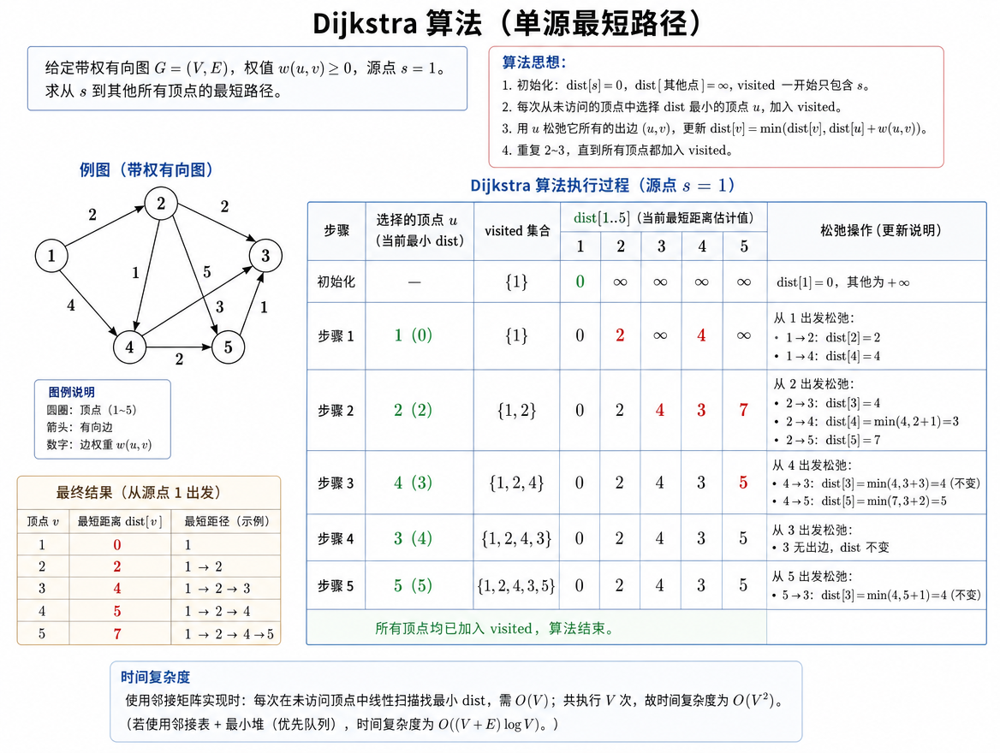
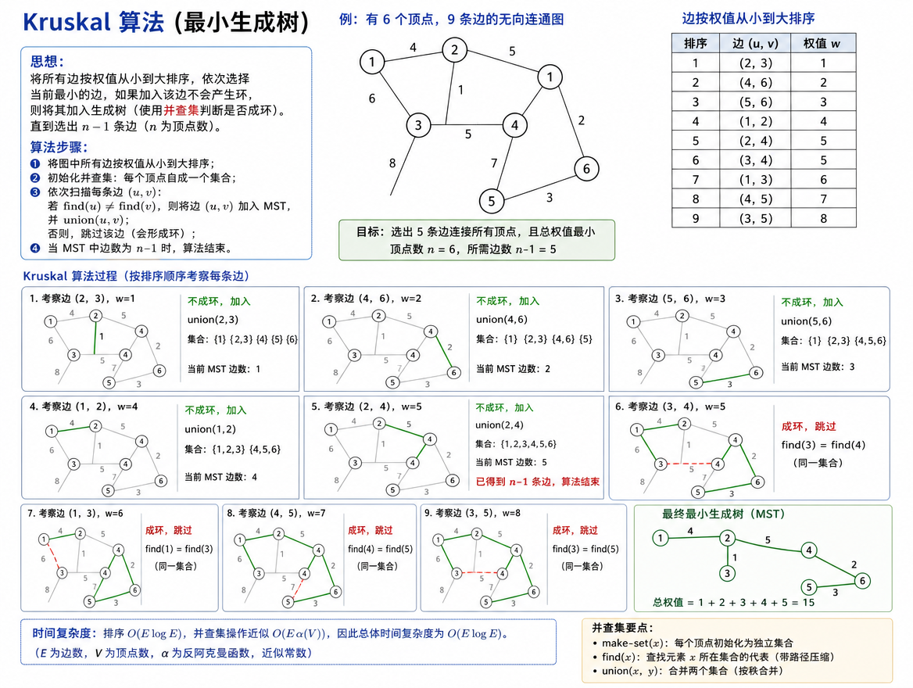
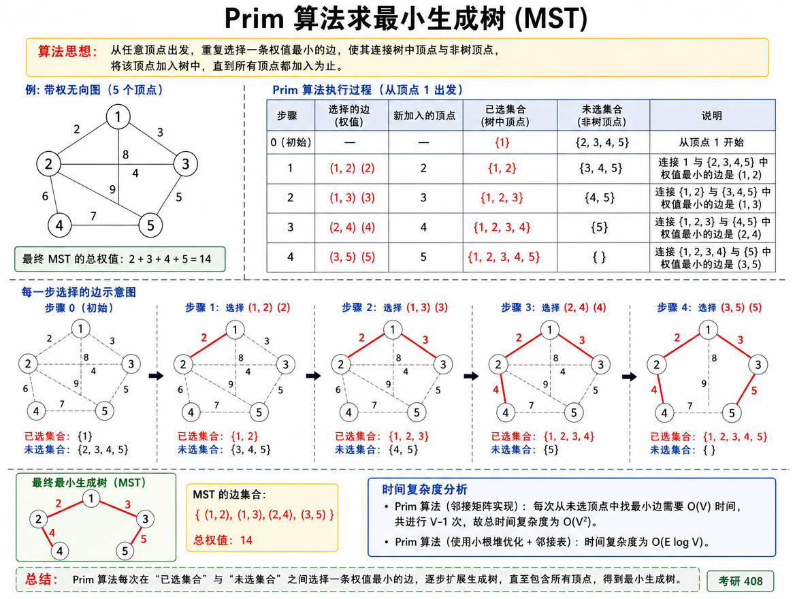
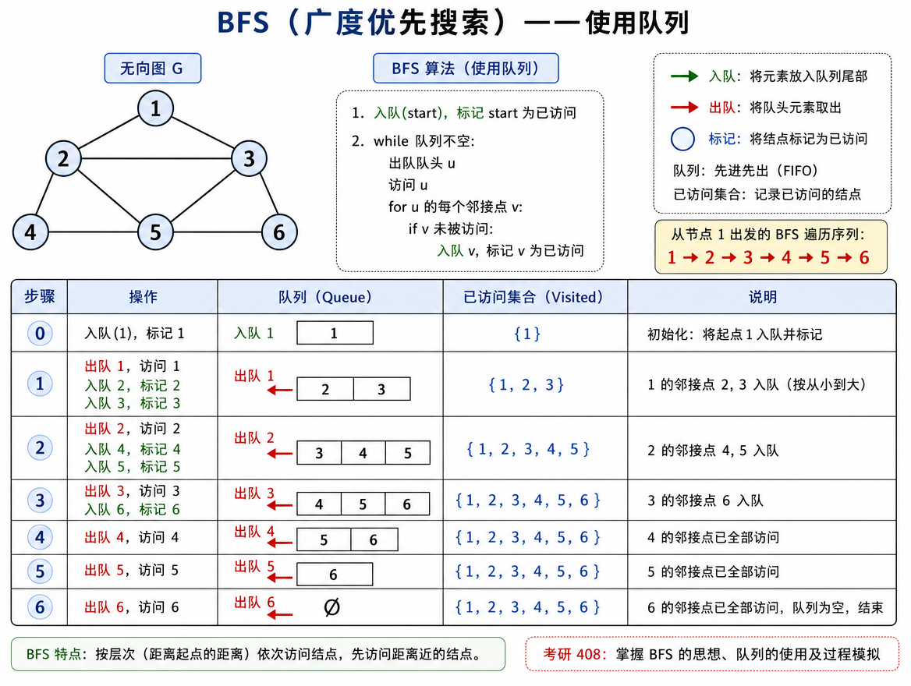
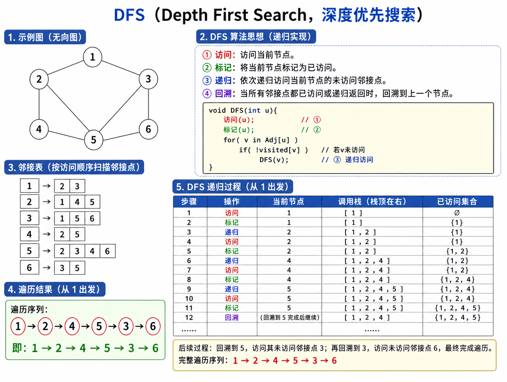
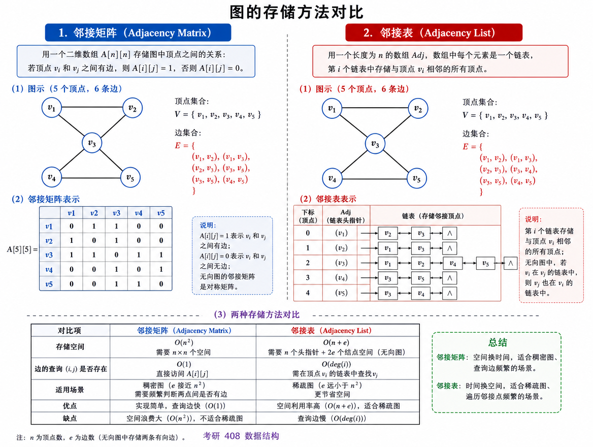
- 🔑 Dijkstra 怕负权，Floyd 怕负环
- 🔑 Prim 归点适合稠密，Kruskal 选边适合稀疏
- 🔑 $ve$ 顺推取大、$vl$ 逆推取小，余量为零是关键
- 🔑 十字链表管有向，多重表管无向，边都只存一份
【真题速查】
| 年份 | 题号 | 考点 |
|---|---|---|
| 2024 | 4, 6, 41/42 | 图的存储、最短路径、图大题 |
| 2023 | 4, 6, 41/42 | 拓扑排序、MST、图大题 |
| 2022 | 4, 6, 41/42 | 最短路径、图的遍历、图大题 |
| 2021 | 4, 6, 41/42 | 关键路径、连通性、图大题 |
| 2020 | 4, 6, 41/42 | 拓扑排序、Dijkstra、图大题 |
| 2019 | 4, 6, 41/42 | 图的遍历、MST、图大题 |
逐题真题：先阅读上方知识点，再按年份展开下列原题；每道题均已对应本章节知识点。
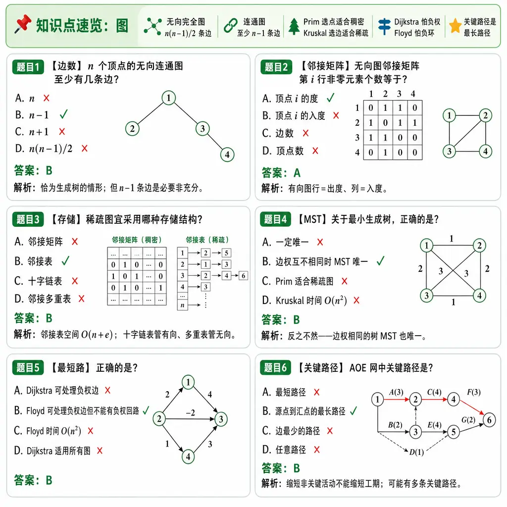
（考点归类供参考，具体题号以历年原卷为准；408 综合题中数据结构大题为第 41 题（算法设计）和第 42 题（应用题），第 43、44 题为计算机组成原理大题。）
第6章 查找
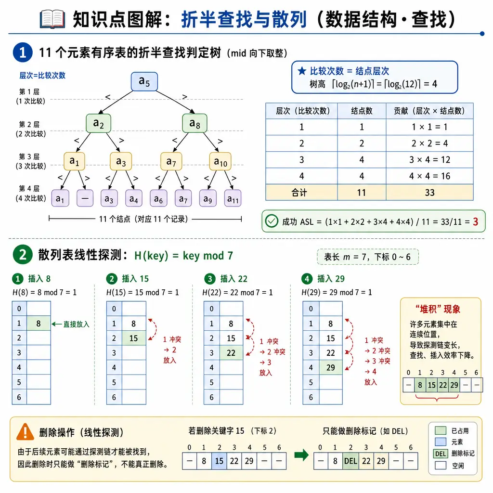
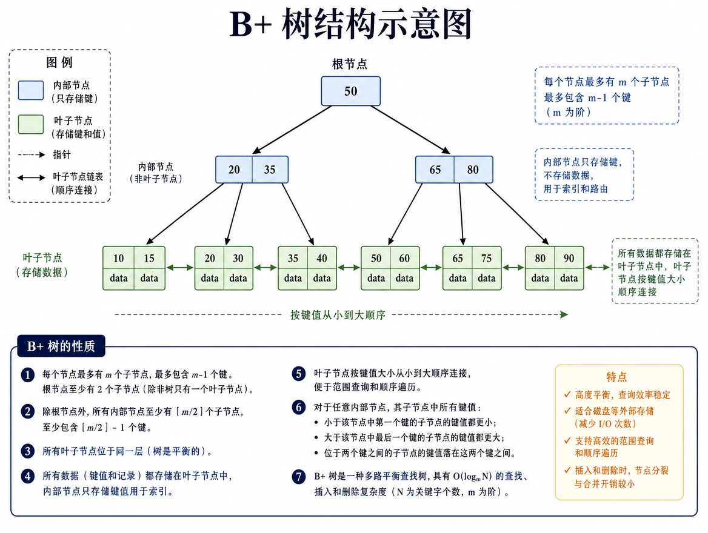
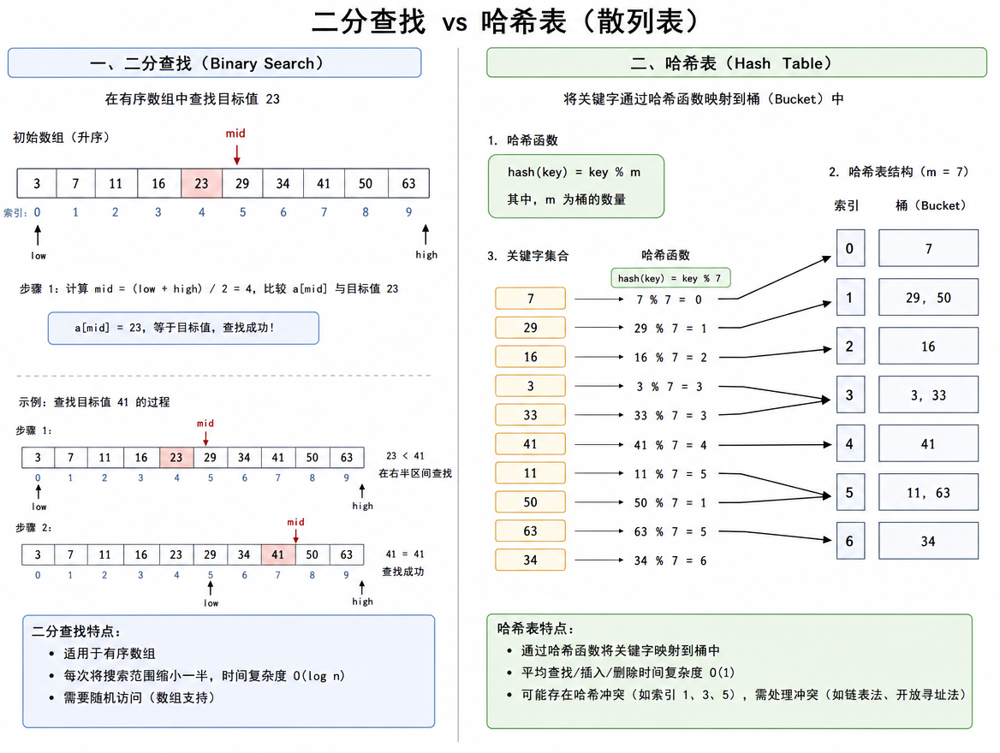
【分值占比】约 6~10 分
【考频】⭐⭐⭐⭐（高频，常与排序结合考）
【必背】
- 顺序查找、折半查找的算法与ASL计算
- 分块查找（索引顺序查找）的结构与ASL
- 折半查找的判定树
- 二叉排序树（BST）查找、插入、删除
- 平衡二叉树（AVL）查找
- 散列表（哈希表）的构造、冲突处理
- B树、B+树的定义、插入、删除
- 各种查找方法的ASL对比
【核心概念】
6.1 查找基本概念
查找表：同一类型数据元素构成的集合。 关键字：唯一标识数据元素的数据项。 平均查找长度（ASL）： $$ASL = \sum_{i=1}^{n} P_i \times C_i$$ 其中 $P_i$ 为查找第 $i$ 个元素的概率（通常等概率 $P_i = \frac{1}{n}$），$C_i$ 为查找第 $i$ 个元素需要的比较次数。
6.2 顺序查找
逐个比较，适用于顺序表和链表。
int SeqSearch(SSTable ST, KeyType key) {
ST.elem[0].key = key; // 哨兵
for (i = ST.length; ST.elem[i].key != key; i--);
return i; // 0表示未找到
}
ASL： - 成功：$ASL_{succ} = \frac{n+1}{2}$ - 失败：$ASL_{unsucc} = n + 1$（有哨兵时）
时间复杂度：$O(n)$
6.3 折半查找（二分查找）
要求：顺序存储、关键字有序。
int BinarySearch(SSTable ST, KeyType key) {
int low = 1, high = ST.length;
while (low <= high) {
int mid = (low + high) / 2;
if (ST.elem[mid].key == key) return mid;
else if (key < ST.elem[mid].key) high = mid - 1;
else low = mid + 1;
}
return 0;
}
判定树： - 是一棵平衡二叉树 - 高度：$\lceil \log_2(n+1) \rceil$ 或 $\lfloor \log_2 n \rfloor + 1$ - 成功ASL：$ASL_{succ} = \frac{1}{n}\sum_{i=1}^{n} l_i \approx \log_2(n+1) - 1$ - 失败ASL：$ASL_{unsucc} = \frac{1}{n+1}\sum_{j=1}^{n+1} l'_j$（外部结点高度之和除以n+1）
⚠️ 易错警示：$ASL_{succ} = \frac{n+1}{n}\log_2(n+1) - 1$ 的等号仅当判定树为满二叉树（$n = 2^h - 1$）时精确成立，一般 $n$ 时只能取近似 $ASL_{succ} \approx \log_2(n+1) - 1$。
💡 技巧：判定树的形态由 $n$ 唯一确定（与具体关键字无关）；$mid$ 向下取整时，任一结点右子树高度与左子树高度之差为 0 或 1，最底层结点集中在左侧连续分布。
时间复杂度：$O(\log n)$
6.3.1 分块查找（索引顺序查找）
结构：将查找表分为若干块，块内无序、块间有序（后一块中所有关键字均大于前一块的最大关键字）。另建一张索引表，每块对应一个索引项（该块最大关键字 + 块内首元素地址），索引表按关键字有序。
查找过程：先在索引表中确定目标所在块（可折半或顺序），再在块内顺序查找。故 ASL 为两段之和：
$$ASL = L_I + L_S$$
其中 $L_I$ 为查索引表的平均查找长度，$L_S$ 为块内顺序查找的平均查找长度。
ASL 分析：设表长 $n$，均分为 $b$ 块、每块 $s$ 个记录（$n = b \times s$）。
- 索引表折半、块内顺序：$ASL \approx \log_2\left(\frac{n}{s} + 1\right) + \frac{s}{2}$
- 索引表也顺序：$ASL = \frac{b+1}{2} + \frac{s+1}{2} = \frac{1}{2}\left(\frac{n}{s} + s\right) + 1$
由均值不等式，当 $s = \sqrt{n}$ 时 ASL 最小：
$$ASL_{min} = \sqrt{n} + 1$$
与折半查找对比：
| 特性 | 折半查找 | 分块查找 |
|---|---|---|
| 时间复杂度 | $O(\log n)$ | $O(\sqrt{n})$ |
| 存储与有序要求 | 顺序存储、整体有序 | 块间有序、块内无序，可链式存储 |
| 插入删除 | 需移动大量元素 | 只在对应块内操作，代价小 |
| 适用 | 静态表、查多改少 | 动态变化较频繁的查找表 |
⚠️ 易错警示：分块查找要求"块间有序"而非块内有序；最优分块 $s = \sqrt{n}$ 时 $ASL_{min} = \sqrt{n} + 1$，不要漏掉 "+1"。
6.4 二叉排序树查找
BST 的查找、插入、删除操作已在第4章介绍（中序遍历得递增序列、删除的三种情形），此处关注其查找效率。
ASL 与树高的关系：BST 中查找任一关键字的比较次数不超过树高 $h$，故平均查找长度取决于树的形态：
- 最好（树较平衡）：$h = O(\log n)$，平均 $ASL = O(\log n)$，与折半查找判定树同级
- 最坏（退化为单支树，如按有序序列插入）：$h = n$，$ASL = O(n)$，退化为顺序查找
- $n$ 个关键字随机插入时，平均深度为 $O(\log n)$，平均 $ASL = O(\log n)$
💡 技巧：同一组关键字，插入序列不同则 BST 形态不同、ASL 不同；折半查找判定树形态唯一，这是两者的本质差别（常考选择题）。
6.5 平衡二叉树（AVL）查找
LL/RR/LR/RL 四种旋转调整已在第4章介绍，此处关注其查找效率。
ASL 与树高的关系：高度为 $h$ 的 AVL 树所含最少结点数 $N_h$ 满足递推 $N_h = N_{h-1} + N_{h-2} + 1$（$N_1 = 1$，$N_2 = 2$），与斐波那契数列同阶，故 $h = O(\log n)$。AVL 通过平衡条件把树高严格控制在 $\Theta(\log n)$，平均 $ASL$ 约为 $\log_2(n+1) - 1$ 量级，与折半查找判定树相当，查找效率稳定在 $O(\log n)$——这正是它相对普通 BST 的核心优势。
6.6 B树与B+树
m阶B树的定义： 1. 每个结点最多有 $m$ 棵子树（最多 $m-1$ 个关键字） 2. 根结点至少有2棵子树（非空时），其他非叶结点至少有 $\lceil m/2 \rceil$ 棵子树 3. 所有叶子结点在同一层（失败结点） 4. 结点内关键字有序，子树关键字范围在父结点关键字之间
B树的高度： - 含 $n$ 个关键字的 $m$ 阶B树高度 $h$ 满足： $$\log_m(n+1) \leq h \leq \log_{\lceil m/2 \rceil}\left(\frac{n+1}{2}\right) + 1$$
B树的插入： - 在叶子层插入 - 结点满（$m-1$ 个关键字）时分裂：中间关键字提升到父结点 - 根结点分裂则树高增1
B树的删除： - 关键字在非叶子：用直接前驱/后继替代，转化为叶子删除 - 叶子结点关键字个数 $> \lceil m/2 \rceil - 1$：直接删除 - 否则：借（兄弟够借）或合并（兄弟不够借）
B+树： - 非叶子结点只起索引作用，关键字也在叶子 - 叶子结点包含全部关键字，且有序链表连接 - 支持顺序查找和随机查找
| 特性 | B树 | B+树 |
|---|---|---|
| 关键字分布 | 所有结点 | 叶子结点（非叶子是索引） |
| 叶子结点 | 无特殊 | 含全部关键字，有序链表连接 |
| 查找 | 可在非叶子结束 | 必到叶子 |
| 顺序查找 | 不支持 | 支持（叶子链表） |
| 应用 | 文件系统 | 数据库索引 |
6.7 散列表（哈希表）
散列函数：将关键字映射到散列地址的函数 $H(key)$。
常用散列函数： | 方法 | 公式 | 适用 | |------|------|------| | 直接定址 | $H(key) = a \times key + b$ | 关键字分布连续 | | 除留余数 | $H(key) = key \mod p$ | 最常用，$p$ 取不大于表长的素数 | | 数字分析 | 取关键字某些位 | 关键字位数较多 | | 平方取中 | 取关键字平方的中间几位 | 较均匀分布 | | 折叠法 | 分段叠加 | 关键字位数多 |
冲突：不同关键字映射到同一地址。$H(key_1) = H(key_2)$ 且 $key_1 \neq key_2$。
装填因子：$\alpha = \frac{n}{m}$，$n$ 为记录数，$m$ 为散列表长。ASL与$\alpha$有关，与$n$无关。
冲突处理方法：
1. 开放定址法： $$H_i = (H(key) + d_i) \mod m$$
| 探测方法 | $d_i$ 取值 | 特点 |
|---|---|---|
| 线性探测 | $d_i = 0, 1, 2, ..., m-1$ | 易产生堆积 |
| 二次探测 | $d_i = 0, 1, -1, 4, -4, ...$ | 减少堆积 |
| 双散列 | $d_i = i \times H_2(key)$ | 再散列 |
堆积（聚集）现象：线性探测中，一旦发生冲突，记录会占用其后的空闲位置，使后续插入的记录更容易与之冲突，不同关键字的探测序列相互重叠，形成成片连续占用的"堆积"，平均探查长度显著增大。二次探测（探查位置跳跃分布）与双散列可缓解堆积，但不能完全消除。
⚠️ 易错警示：二次探测 $d_i = \pm 1^2, \pm 2^2, \cdots$ 的探查序列不能保证探到表中所有位置（仅当表长 $m$ 取形如 $4j+3$ 的素数时可探遍全表），可能出现表中尚有空位却判定插入失败的情况；线性探测则必能探遍全表。
线性探测ASL： - 成功：$ASL_{succ} \approx \frac{1}{2}(1 + \frac{1}{1-\alpha})$ - 失败：$ASL_{unsucc} \approx \frac{1}{2}(1 + \frac{1}{(1-\alpha)^2})$
2. 链地址法（拉链法）： - 同义词放在同一链表中 - 成功ASL：$ASL_{succ} \approx 1 + \frac{\alpha}{2}$ - 失败ASL：$ASL_{unsucc} \approx \alpha + e^{-\alpha}$
删除：开放定址法不能物理删除（会断链），需标记"删除"；链地址法可直接删除。
【查找方法对比】
| 查找方法 | 数据结构 | ASL（成功） | 适用 |
|---|---|---|---|
| 顺序查找 | 顺序表/链表 | $\frac{n+1}{2}$ | 小规模、无序 |
| 折半查找 | 有序顺序表 | $\approx \log_2(n+1)-1$ | 静态有序、查多改少 |
| 分块查找 | 索引表+块 | $\sqrt{n}+1$（最优分块） | 动态、块间有序 |
| 二叉排序树 | 二叉链表 | $O(\log n)$~$O(n)$ | 动态 |
| AVL树 | 二叉链表 | $O(\log n)$ | 动态、高效稳定 |
| B/B+树 | 多叉树 | $O(\log_m n)$ | 磁盘存储、大规模 |
| 散列表 | 数组+链表 | $O(1)$（平均） | 快速查找 |
【易错警示】
- ⚠️ 折半查找判定树的高度：$n$ 个结点的判定树高为 $\lceil \log_2(n+1) \rceil$，不是 $\lfloor \log_2 n \rfloor$
- ⚠️ 分块查找块内无序、块间有序；$s = \sqrt{n}$ 时 $ASL_{min} = \sqrt{n} + 1$
- ⚠️ B树的最小度数：非根非叶结点至少 $\lceil m/2 \rceil$ 棵子树，即至少 $\lceil m/2 \rceil - 1$ 个关键字
- ⚠️ B+树查找必到叶子，B树可在非叶子结束
- ⚠️ 散列表装填因子 $\alpha$ 可以 $> 1$（链地址法），但开放定址法要求 $\alpha < 1$
- ⚠️ 开放定址法删除不能真正删除，需标记
- ⚠️ 二次探测不能保证探到表中所有位置（$m$ 为 $4j+3$ 型素数时除外）
【真题速查】
| 年份 | 题号 | 考点 |
|---|---|---|
| 2024 | 7, 8 | 折半查找、散列表 |
| 2023 | 7, 8 | B树、散列表 |
| 2022 | 7, 8 | 二叉排序树、散列表 |
| 2021 | 7, 8 | AVL树、散列表 |
| 2020 | 7, 8 | B+树、散列表 |
| 2019 | 7, 8 | 折半查找、散列表 |
逐题真题：先阅读上方知识点，再按年份展开下列原题；每道题均已对应本章节知识点。


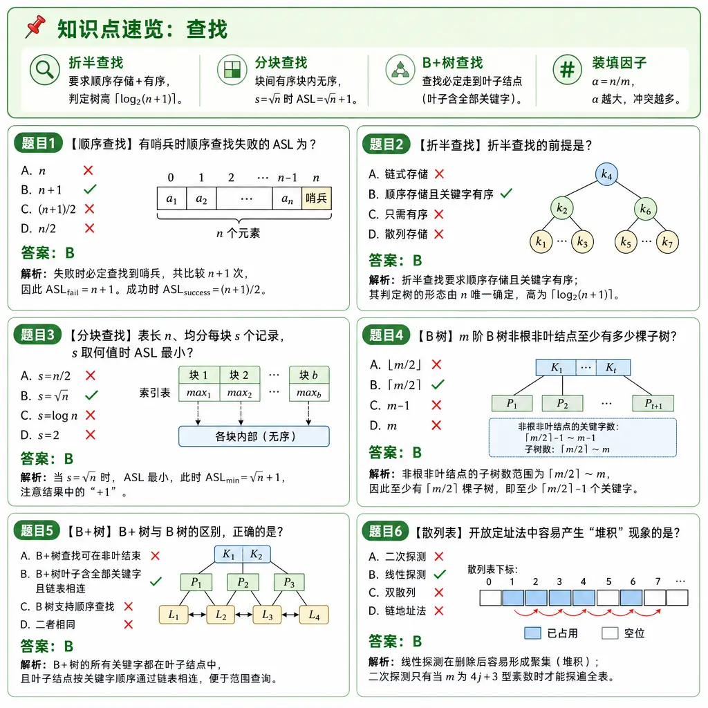
（考点归类供参考，具体题号以历年原卷为准）
第7章 排序
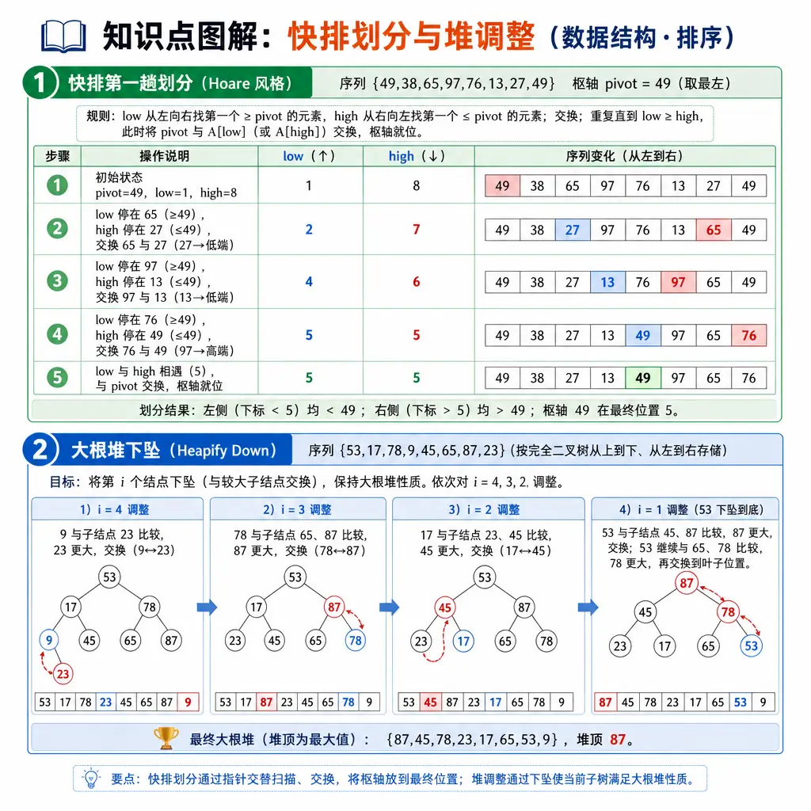
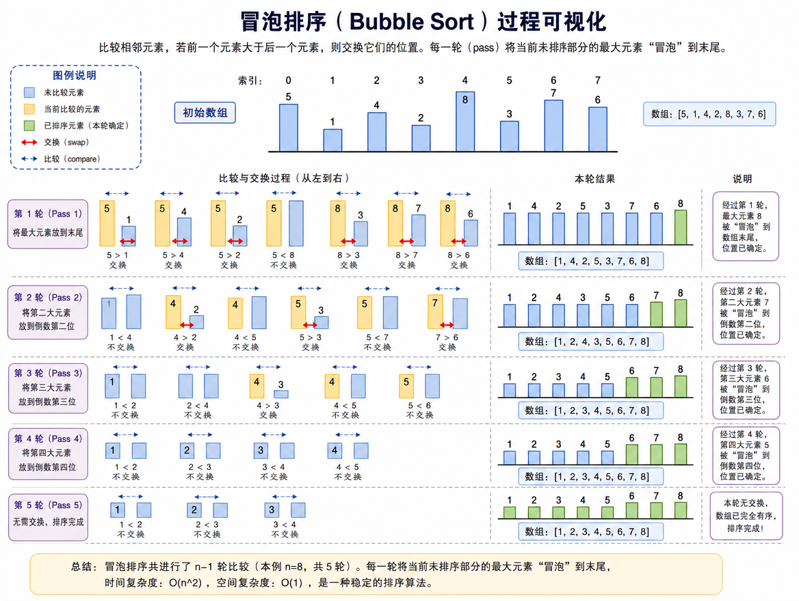
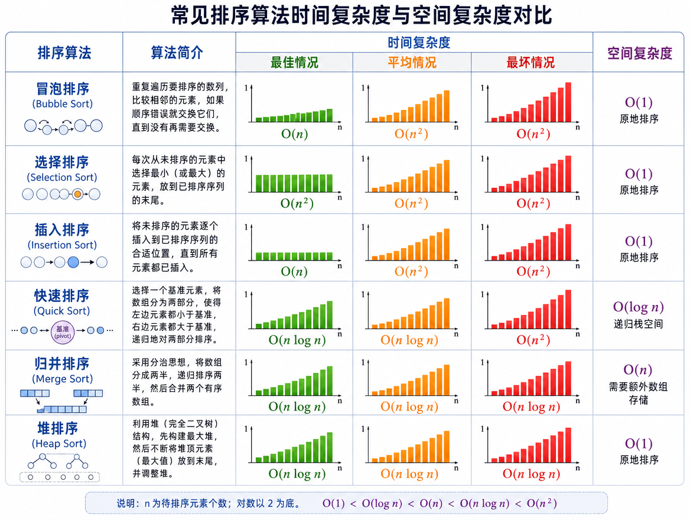
【分值占比】约 6~10 分
【考频】⭐⭐⭐⭐（高频，每年必考，大题常客）
【必背】
- 九大内部排序算法（直接插入、折半插入、希尔、冒泡、快速、简单选择、堆、归并、基数）的思想、过程、代码
- 各排序算法的时间/空间复杂度、稳定性
- 排序算法的比较与适用场景
- 快速排序的划分过程
- 堆排序的建堆与调整
- 归并排序的合并过程
- 基数排序的分配与收集
- 外部排序的归并趟数与败者树
【核心概念】
7.1 排序基本概念
稳定性：若 $a_i = a_j$ 且 $a_i$ 在 $a_j$ 之前，排序后 $a_i$ 仍在 $a_j$ 之前。
内部排序：数据在内存中完成。 外部排序：数据量大，需借助外存。
🔑 口诀："快希选堆不稳定"——快速排序、希尔排序、简单选择排序、堆排序不稳定，其余常见内部排序（直接插入、折半插入、冒泡、归并、基数）均稳定。
7.2 插入排序
1. 直接插入排序：
逐个将元素插入已排序序列的适当位置。
void InsertSort(ElemType A[], int n) {
for (i = 2; i <= n; i++) {
if (A[i] < A[i-1]) {
A[0] = A[i]; // 哨兵
for (j = i-1; A[0] < A[j]; j--)
A[j+1] = A[j];
A[j+1] = A[0];
}
}
}
| 指标 | 情况 |
|---|---|
| 最好 | $O(n)$（已有序） |
| 最坏 | $O(n^2)$（逆序） |
| 平均 | $O(n^2)$ |
| 空间 | $O(1)$ |
| 稳定性 | 稳定 |
2. 折半插入排序：
用折半查找找插入位置，减少比较次数，但移动次数不变。 - 时间：$O(n^2)$（比较 $O(n\log n)$，移动 $O(n^2)$） - 空间：$O(1)$ - 稳定
3. 希尔排序：
分组插入排序，增量逐步减小至1。
void ShellSort(ElemType A[], int n) {
for (dk = n/2; dk >= 1; dk /= 2)
for (i = dk+1; i <= n; i++)
if (A[i] < A[i-dk]) {
A[0] = A[i];
for (j = i-dk; j > 0 && A[0] < A[j]; j -= dk)
A[j+dk] = A[j];
A[j+dk] = A[0];
}
}
- 时间：约 $O(n^{1.3})$（依赖增量序列），最坏 $O(n^2)$
- 空间：$O(1)$
- 不稳定
7.3 交换排序
1. 冒泡排序：
相邻元素两两比较，逆序则交换。下面代码从后往前扫描，每趟将最小元素"冒泡"到最前面；等价地也可从前往后扫描，每趟把最大元素"沉"到末尾。两种写法每趟都能确定一个元素的最终位置。
void BubbleSort(ElemType A[], int n) {
for (i = 1; i < n; i++) {
flag = false;
for (j = n; j > i; j--)
if (A[j] < A[j-1]) {
swap(A[j], A[j-1]);
flag = true;
}
if (!flag) return; // 已有序
}
}
- 最好：$O(n)$
- 最坏/平均：$O(n^2)$
- 空间：$O(1)$
- 稳定
2. 快速排序：
分治法：选枢轴，划分成两部分，递归排序。
void QuickSort(ElemType A[], int low, int high) {
if (low < high) {
int pivotpos = Partition(A, low, high);
QuickSort(A, low, pivotpos-1);
QuickSort(A, pivotpos+1, high);
}
}
int Partition(ElemType A[], int low, int high) {
ElemType pivot = A[low];
while (low < high) {
while (low < high && A[high] >= pivot) high--;
A[low] = A[high];
while (low < high && A[low] <= pivot) low++;
A[high] = A[low];
}
A[low] = pivot;
return low;
}
【例】对序列 ${49, 38, 65, 97, 76, 13, 27, \overline{49}}$ 进行快速排序，写出第一趟划分的全过程（取首元素为枢轴，$\overline{49}$ 表示第二个 49）。
解：枢轴 $pivot = 49$，$low$、$high$ 两指针交替向中间扫描：
| 步骤 | 操作 | 序列状态 |
|---|---|---|
| 初始 | $low=1$，$high=8$ | 49 38 65 97 76 13 27 $\overline{49}$ |
| ① | $high$ 左移遇 27 < 49，放到 $low$ 处 | 27 38 65 97 76 13 __ $\overline{49}$ |
| ② | $low$ 右移遇 65 > 49，放到 $high$ 处 | 27 38 __ 97 76 13 65 $\overline{49}$ |
| ③ | $high$ 左移遇 13 < 49，放到 $low$ 处 | 27 38 13 97 76 __ 65 $\overline{49}$ |
| ④ | $low$ 右移遇 97 > 49，放到 $high$ 处 | 27 38 13 __ 76 97 65 $\overline{49}$ |
| ⑤ | $high$ 左移与 $low$ 相遇，放入枢轴 | 27 38 13 49 76 97 65 $\overline{49}$ |
第一趟结果：${27, 38, 13}\ 49\ {76, 97, 65, \overline{49}}$，枢轴 49 到达最终位置。
⚠️ 易错警示：枢轴取自低端，低端已空出，故 $high$ 先动；比较条件含等号（$\geq$ / $\leq$），遇相等元素要移动指针，否则可能死循环。
- 最好/平均：$O(n\log n)$
- 最坏：$O(n^2)$（已有序或逆序）
- 空间：$O(\log n)$（递归栈），最坏 $O(n)$
- 不稳定
- 枢轴选择：首元素、尾元素、随机、三数取中
7.4 选择排序
1. 简单选择排序：
每趟选最小元素与当前位置交换。
void SelectSort(ElemType A[], int n) {
for (i = 1; i < n; i++) {
min = i;
for (j = i+1; j <= n; j++)
if (A[j] < A[min]) min = j;
if (min != i) swap(A[i], A[min]);
}
}
- 时间：始终是 $O(n^2)$（比较次数固定）
- 空间：$O(1)$
- 不稳定
2. 堆排序：
利用堆数据结构的选择排序。
大根堆：$L[i] \geq L[2i]$ 且 $L[i] \geq L[2i+1]$（小根堆反之）
建堆（从下往上调整）：
void BuildMaxHeap(ElemType A[], int n) {
for (i = n/2; i >= 1; i--) // 从最后一个分支结点开始
HeapAdjust(A, i, n);
}
调整（下沉）：
void HeapAdjust(ElemType A[], int k, int n) {
A[0] = A[k];
for (i = 2*k; i <= n; i *= 2) {
if (i < n && A[i] < A[i+1]) i++; // 选较大的孩子
if (A[0] >= A[i]) break;
A[k] = A[i];
k = i;
}
A[k] = A[0];
}
堆排序：
void HeapSort(ElemType A[], int n) {
BuildMaxHeap(A, n);
for (i = n; i > 1; i--) {
swap(A[i], A[1]); // 堆顶与末尾交换
HeapAdjust(A, 1, i-1); // 调整剩余堆
}
}
【例】对序列 ${53, 17, 78, 9, 45, 65, 87, 23}$ 建立大根堆，写出调整过程。
解：$n = 8$，从最后一个分支结点 $i = \lfloor n/2 \rfloor = 4$ 开始自底向上筛选：
| 步骤 | 调整结点 | 操作 | 序列状态 |
|---|---|---|---|
| 初始 | — | — | 53 17 78 9 45 65 87 23 |
| ① | $i=4$（值 9） | 与孩子 23 交换 | 53 17 78 23 45 65 87 9 |
| ② | $i=3$（值 78） | 与较大孩子 87 交换 | 53 17 87 23 45 65 78 9 |
| ③ | $i=2$（值 17） | 与较大孩子 45 交换 | 53 45 87 23 17 65 78 9 |
| ④ | $i=1$（值 53） | 先与 87 交换，继续下坠再与 78 交换 | 87 45 78 23 17 65 53 9 |
最终大根堆：${87, 45, 78, 23, 17, 65, 53, 9}$。
💡 技巧：下坠"一次到底"——先把待调元素暂存（代码中哨兵 A[0]），与其较大孩子逐层比较下挪，最后落入空位，避免逐层 swap 的冗余赋值。
🔑 口诀："大根堆排升序"——每趟把堆顶（最大值）换到末尾。
- 建堆时间：$O(n)$
- 每次调整：$O(\log n)$
- 总时间：$O(n\log n)$
- 空间：$O(1)$
- 不稳定
7.5 归并排序
将两个有序表合并成一个有序表，递归地对半分解。
void Merge(ElemType A[], int low, int mid, int high) {
// 将A[low..mid]和A[mid+1..high]合并
for (k = low; k <= high; k++) B[k] = A[k];
for (i = low, j = mid+1, k = low; i <= mid && j <= high; k++) {
if (B[i] <= B[j]) A[k] = B[i++];
else A[k] = B[j++];
}
while (i <= mid) A[k++] = B[i++];
while (j <= high) A[k++] = B[j++];
}
void MergeSort(ElemType A[], int low, int high) {
if (low < high) {
int mid = (low + high) / 2;
MergeSort(A, low, mid);
MergeSort(A, mid+1, high);
Merge(A, low, mid, high);
}
}
【例】对序列 ${49, 38, 65, 97, 76, 13, 27}$ 进行 2 路归并排序，写出每趟归并结果。
解：
| 趟次 | 归并段长度 | 结果 |
|---|---|---|
| 初始 | 1 | [49] [38] [65] [97] [76] [13] [27] |
| 第 1 趟 | 1 → 2 | [38 49] [65 97] [13 76] [27] |
| 第 2 趟 | 2 → 4 | [38 49 65 97] [13 27 76] |
| 第 3 趟 | 4 → 8 | [13 27 38 49 65 76 97] |
共 $\lceil \log_2 7 \rceil = 3$ 趟。
⚠️ 易错警示：最后一组长度不足时直接保留参与下一趟，不要丢弃或强行补齐。
- 时间：$O(n\log n)$（始终）
- 空间：$O(n)$（辅助数组）
- 稳定
7.6 基数排序
按位排序，从低位到高位（LSD）或高位到低位（MSD）。
LSD基数排序： 1. 按最低位分配到0~9的桶 2. 按桶顺序收集 3. 对下一位重复，直至最高位
【例】对序列 ${278, 109, 063, 930, 589, 184, 505, 269, 008, 083}$ 进行 LSD 基数排序，写出每趟分配收集结果。
解：$d = 3$ 位、$r = 10$ 个队列，从个位开始：
| 趟次 | 按该位分配后收集的结果 |
|---|---|
| 初始 | 278 109 063 930 589 184 505 269 008 083 |
| 第 1 趟（个位） | 930 063 083 184 505 278 008 589 109 269 |
| 第 2 趟（十位） | 505 008 109 930 063 269 278 083 184 589 |
| 第 3 趟（百位） | 008 063 083 109 184 269 278 505 589 930 |
⚠️ 易错警示：每趟必须按队列顺序稳定收集，否则低位已排好的次序会被破坏——基数排序的稳定性正来源于此。
💡 技巧：计数排序、桶排序同属非比较类排序，考纲不作重点，了解思想即可。
- 时间：$O(d(n+r))$，$d$ 为位数，$r$ 为基数
- 空间：$O(r)$
- 稳定
7.7 外部排序
基本过程（两阶段）： 1. 生成初始归并段：按内存可用空间将文件分段读入，内部排序后写回外存，得到 $r$ 个初始归并段 2. 多路归并：反复将 $k$ 个归并段归并为 1 个，直至只剩 1 个有序文件
多路平衡归并：每次取 $k$ 个归并段归并为 1 个新段，使所有归并段参加的归并趟数相同，称 $k$ 路平衡归并。设初始归并段数为 $r$，则归并趟数为：
$$S = \lceil \log_k r \rceil$$
2 路归并时 $S = \lceil \log_2 r \rceil$。
I/O 次数分析：外部排序的总时间主要由磁盘 I/O 决定。每趟归并需将全部 $n$ 个记录读入、写出各一遍，故：
$$\text{I/O 次数} \approx 2n \times (S + 1)$$
（$+1$ 为生成初始归并段的一遍读写）。由 $S = \lceil \log_k r \rceil$ 可知两条降 I/O 途径：
- 增大归并路数 $k$ → 趟数减少 → I/O 减少
- 减少初始归并段数 $r$（增大内存工作区，或用置换-选择排序生成更长的段）→ 趟数减少 → I/O 减少
但 $k$ 增大后，内部归并时简单地从 $k$ 个关键字中选最小需 $k - 1$ 次比较，总比较次数随 $k$ 上升；引入败者树后每次选最小仅需 $O(\log k)$ 次比较，使内部归并总比较次数与 $k$ 无关，从而可以放心增大 $k$。
败者树：$k$ 路归并时，选最小关键字只需 $O(\log k)$ 次比较。
置换-选择排序：利用内存工作区生成更长的初始归并段，平均长度为 $2m$（$m$ 为内存工作区大小），从而减少 $r$。
最佳归并树：类似哈夫曼树，使各归并段带权路径长度（I/O 总代价）最小的 $k$ 叉树。设初始归并段数为 $n_0$，若 $(n_0 - 1) \bmod (k-1) = u \neq 0$，需补 $k - 1 - u$ 个虚段（即补足到 $n_0 - 1$ 能被 $k - 1$ 整除）。
⚠️ 易错警示：归并趟数 $S = \lceil \log_k r \rceil$ 中的 $r$ 是初始归并段数而非记录数；虚段个数由 $n_0$ 与 $k$ 共同决定，别与记录总数混淆。
【排序算法总结对比】
| 排序算法 | 最好 | 最坏 | 平均 | 空间 | 稳定性 | 每趟确定1个最终位置 | 适用 |
|---|---|---|---|---|---|---|---|
| 直接插入 | $O(n)$ | $O(n^2)$ | $O(n^2)$ | $O(1)$ | ✓ | 否 | 小规模、基本有序 |
| 希尔 | $O(n)$ | $O(n^2)$ | $O(n^{1.3})$ | $O(1)$ | ✗ | 否 | 中等规模 |
| 冒泡 | $O(n)$ | $O(n^2)$ | $O(n^2)$ | $O(1)$ | ✓ | 能 | 教学用 |
| 快速 | $O(n\log n)$ | $O(n^2)$ | $O(n\log n)$ | $O(\log n)$ | ✗ | 能（枢轴） | 大规模、通用 |
| 选择 | $O(n^2)$ | $O(n^2)$ | $O(n^2)$ | $O(1)$ | ✗ | 能 | 交换代价高时 |
| 堆 | $O(n\log n)$ | $O(n\log n)$ | $O(n\log n)$ | $O(1)$ | ✗ | 能（堆顶） | 大规模、空间受限 |
| 归并 | $O(n\log n)$ | $O(n\log n)$ | $O(n\log n)$ | $O(n)$ | ✓ | 否 | 稳定排序、链表 |
| 基数 | $O(d(n+r))$ | $O(d(n+r))$ | $O(d(n+r))$ | $O(r)$ | ✓ | 否 | 位数少的整数 |
【易错警示】
- ⚠️ 快速排序最坏情况 $O(n^2)$ 容易被忽略，枢轴选择不当导致
- ⚠️ 堆排序建堆是 $O(n)$，不是 $O(n\log n)$
- ⚠️ 归并排序空间复杂度 $O(n)$，不是 $O(1)$
- ⚠️ 希尔排序不稳定，间隔跳跃会改变相等元素顺序
- ⚠️ 堆排序中，大根堆得到升序序列（每次把最大放末尾），小根堆得到降序序列
- ⚠️ 基数排序是稳定的，但不是基于比较的排序
- ⚠️ 冒泡、快排、选择、堆每趟能确定一个元素的最终位置；插入、希尔、归并、基数不能
【真题速查】
| 年份 | 题号 | 考点 |
|---|---|---|
| 2024 | 9, 10, 42 | 排序过程、堆排序、排序大题 |
| 2023 | 9, 10, 42 | 排序比较、快速排序、排序大题 |
| 2022 | 9, 10, 42 | 归并排序、基数排序、排序大题 |
| 2021 | 9, 10, 42 | 堆排序、排序稳定性、排序大题 |
| 2020 | 9, 10, 42 | 快速排序、希尔排序、排序大题 |
| 2019 | 9, 10, 42 | 排序过程分析、堆排序、排序大题 |
逐题真题：先阅读上方知识点，再按年份展开下列原题；每道题均已对应本章节知识点。
- 2024 年第 8 题 · 快速排序一趟划分：原题与逐题解析 ↗
- 2024 年第 9 题 · 大根堆删除：原题与逐题解析 ↗
- 2024 年第 10 题 · 归并排序比较次数：原题与逐题解析 ↗
- 2024 年第 11 题 · 败者树：原题与逐题解析 ↗

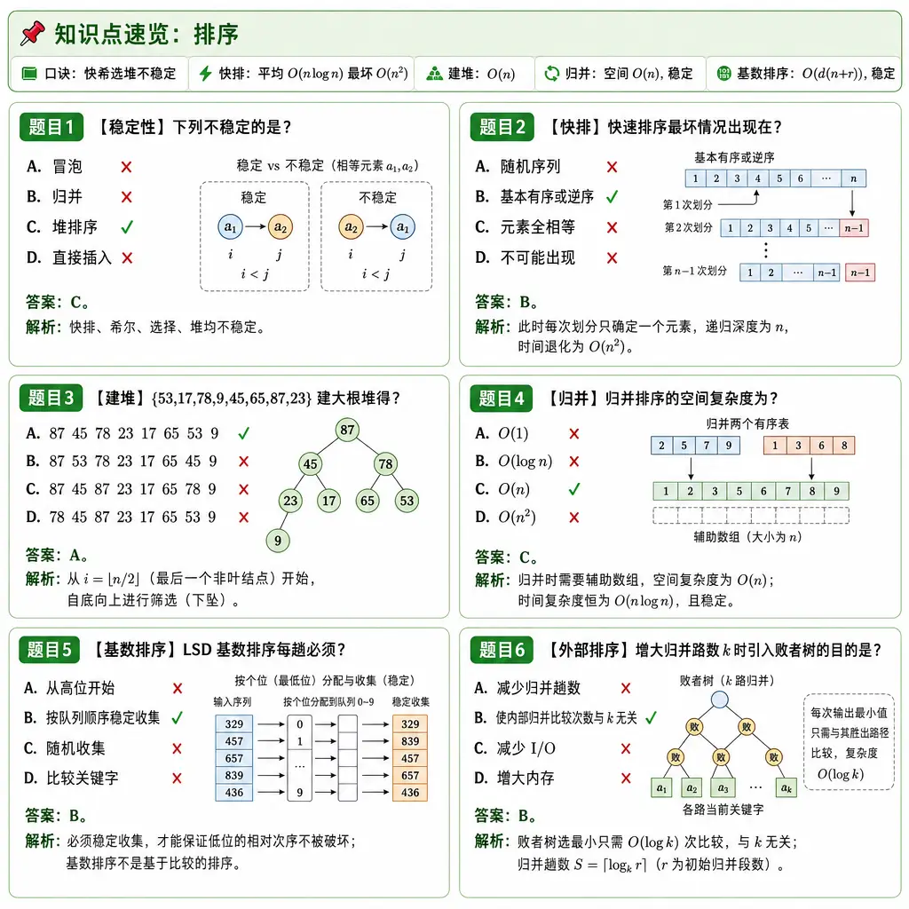
（考点归类供参考，具体题号以历年原卷为准）
数据结构部分 完
常见问题
数据结构大题怎么准备？
41 题算法设计题必考代码：重点练链表逆置、找倒数第 k 个结点、二叉树遍历（递归/非递归）、图的最短路。42 题应用题常考排序过程、哈夫曼树、最小生成树。答题给分看思想正确、代码可实现、复杂度达标三点。
最后更新：2026-07-29 · 考研冲刺君团队整理 · 内容持续维护